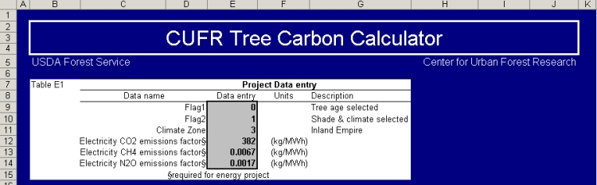
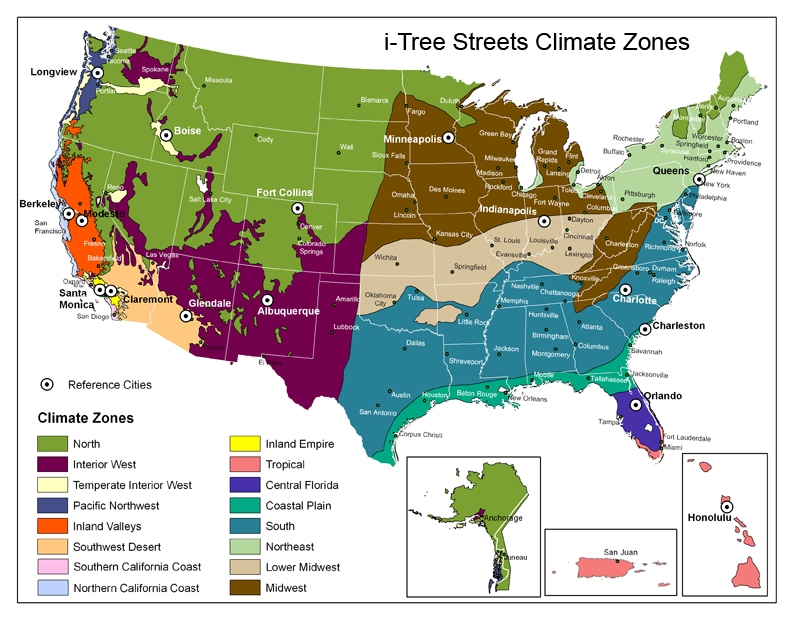
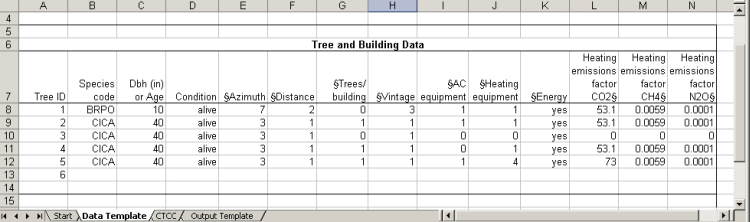
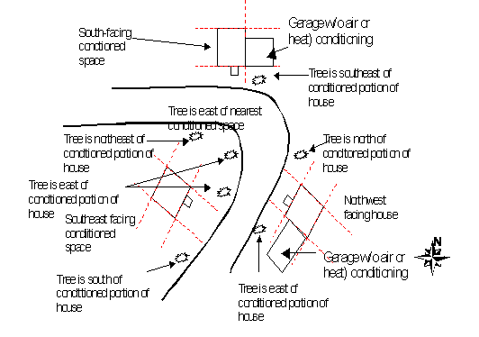
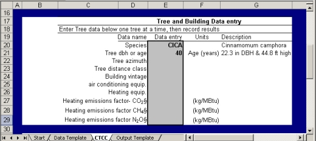
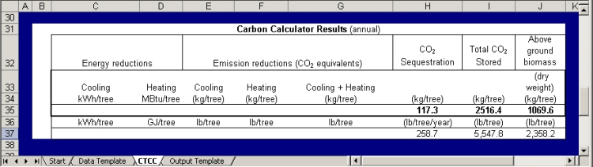
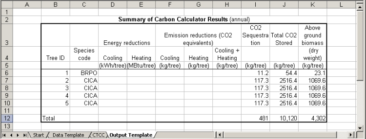
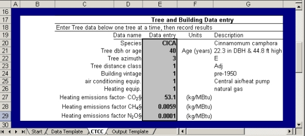
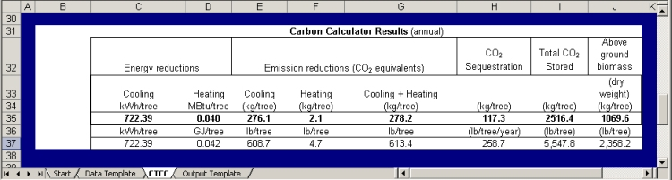
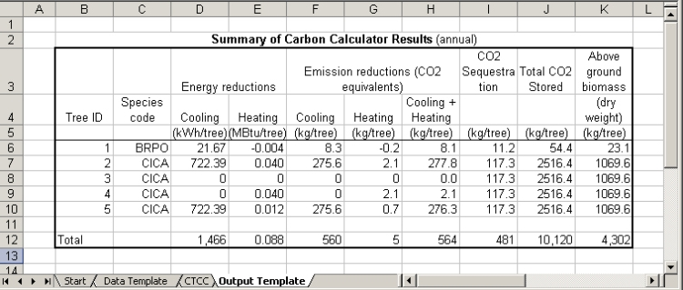

Contents
- Introduction
- Background
- CTCC Step-by-Step Instructions
- Methods
- Initial Uncertainty Analysis
- Frequently Asked Questions (FAQs)
- References
Address questions not answered in what follows, including Frequently Asked Questions, to psw_cufr@fs.fed.us
|
|
This Annex describes how to use the CUFR Tree Carbon Calculator (CTCC) to estimate the amount of biomass and carbon stored in a tree, as well as the amount sequestered annually. The CTCC provides information on the effects of tree shade on residential heating and cooling energy use for energy conservation trees. Portions of the CTCC are common to both the carbon storage and energy conservation projects; the latter has additional data and output requirements, which are denoted with “§” in the text that follows. Final sections describe the methods used to determine effects of trees on heating and cooling and potential areas of uncertainty.
The CTCC is intended as “proof of concept” software that is in the testing phase. It is provided "as is" without warranty of any kind. It returns results for a single tree at a time, requiring that project totals be determined externally to the calculator.
A note on units: Carbon reporting currently uses a hybrid of SI and English units, for example kg/MBtu and kg/gal (Air Resources Board 2007). The CTCC follows a similar convention. The most common unit for tree d.b.h. (diameter at breast height, 4.5 ft) measurement is inches, which is used in the CTCC, while outputs are given in kilograms.
|
The CTCC is programmed in an Excel spreadsheet. It is designed to provide carbon-related information for a single tree located in one of sixteen U.S. climate zones. The user must enter information on the size or age of the tree and species for carbon storage. Additional inputs are required for an energy conservation project. CTCC outputs can be used to estimate GHG (greenhouse gas) benefits for existing trees or to forecast future benefits.
Tree size data are based on growth curves developed from samples of 650 - 1000 street trees representing approximately 20 predominant species in each of the sixteen regional reference cities. The biomass equations and calculations used in the CTCC to derive total CO2 stored, total stored above ground, and annual CO2 sequestered are described in Section 4 below. To determine effects of tree shade on building energy performance, over 12,000 simulations were conducted for each reference city using different combinations of tree sizes, locations, and building vintages. More detailed information on procedures can be found in each region’s Community Tree Guide (Maco et al. 2005; McPherson et al. 1999, 2000, 2001, 2002, 2003, 2004, 2006, 2006, 2006, 2007; Peper et al. 2009; Vargas et al. 2007, 2007, 2008).
Users should recognize that conditions vary within regions, and data from the CTCC may not accurately reflect their rate of tree growth, microclimate, or building characteristics. When conditions are different it may be necessary to apply biomass equations manually using adjusted tree growth data and perform building energy simulations with modified weather and tree data to more accurately depict effects of trees on GHGs.
|
Details for obtaining, installing and running the CTCC can be found at http://www.fs.fed.us/ccrc/topics/urban-forests/. In the following instructions where the CTCC application is called CarbonCalculatorNN, the NN refers to the version number
Certain data apply to a GHG tree project as a whole. These data are entered into shaded areas in [CarbonCalculator]CTCC (Figure 1).

Figure 1. Project-related data entry section of CTCC. Shaded area are cells for data input. §required for energy project
The rows in the CTCC data entry section represent the following:
Flag1: Age or DBH. For new projects in which GHG benefits are being predicted into the future, age data should be used. For existing projects where trees have been measured, diameter-at-breast height (d.b.h.) data should be used. For palm species, height should be used rather than d.b.h. Refer to Appendix B of the Urban Forest Project Reporting Protocol for detailed instructions on measuring d.b.h.. Enter 0 to use tree age input and 1 to use d.b.h. input.
Note that if you do not have a d.b.h. measuring tape you may use a common measuring tape to measure the circumference of the tree at breast height, then convert it to diameter (d.b.h.) using the following formula:
d.b.h. = Circumference / π
where π = 3.1416.
For example, if your measure of tree circumference at breast height is 28 inches:
d.b.h. = 28 / 3.1416
= 8.9 in
If you do not measure in the units required by the CTCC (inches), remember to convert your result to inches.
If you are entering data for palms, first enter the species code and scientific name below. The Flag1 field will automatically change to read “Tree Height Selected.” Palm d.b.h. is not indicative of overall tree size or growth, therefore tree height measurements are required. See FAQs section for more information.
Flag2: The CTCC can calculate the energy benefits based solely on shade or general climate benefits of trees can be included (i.e., lower summer air temperatures, reduced wind speeds). Shade benefits can be calculated with more accuracy than climate benefits. Climate benefits are associated with planting large numbers of trees in the same area so that their aggregate effect is measurable. Shade benefits are minimal for trees located more than 60-ft from buildings. Enter 0 to calculate shade benefits only. Enter 1 to calculate shade and climate benefits.
Climate zone: Identify which of 16 regions applies to your project (Fig. 2). Region boundaries are approximate, and the climate of cities within each region can differ considerably. Match Cooling Degree Days and Heating Degree Days for the project location with those in Table 1 if in doubt. Selecting the appropriate region is important because site climate influences space heating and cooling requirements and potential energy savings from trees.

Figure 2. Climate Zone Map.
Table 1. Climate regions for CUFR Tree Carbon Calculator.
| Climate Region | Reference City | CDD1 | HDD2 |
| Interior West | Albuquerque, NM | 1210 | 4362 |
| Northern California Coast | Berkeley | 69 | 3237 |
| Temperate Interior West | Boise, ID | 692 | 6001 |
| Coastal Plain | Charleston, SC | 2011 | 2209 |
| South | Charlotte, NC | 1514 | 3415 |
| Inland Empire | Claremont | 937 | 2133 |
| North | Fort Collins, CO | 623 | 6013 |
| Desert Southwest | Glendale, AZ | 3815 | 1153 |
| Tropical | Honolulu, HI | 4327 | 0 |
| Lower Midwest | Indianapolis, IN | 911 | 5690 |
| Midwest | Minneapolis, MN | 643 | 8002 |
| Inland Valleys | Modesto, CA | 1884 | 2602 |
| Southern California Coast | Santa Monica, CA | 470 | 1291 |
| Pacific Northwest | Longview, WA | 279 | 4461 |
| Central Florida | Orlando, FL | 3400 | 631 |
1CDD=Cooling Degree Days
2HDD=Heating Degree Days
US DOE Energy Plus Weather Data (2009) and National Renewable Energy Lab (2009) , 65°F baseline
|
Emissions factors: For energy conservation projects only, assign utility-specific emission factors for carbon dioxide, methane, and nitrous oxide for cooling (electricity). General electricity emissions factors for each region are listed in Table 2a. Electricity emissions factors vary regionally because of utility-specific differences in the mix of fuels used to generate electricity. Emission factors for space heating will differ depending on heating fuel type used in each building, hence are entered in the building data section that follows. Emission factors for specific utilities can be obtained at http://www.epa.gov/cleanenergy/energy-resources/egrid/index.html. The Environmental Protection Agency (EPA) offers the eGRID summary tables and workbooks free of charge. Because utility choices therein may be limited, it is best to contact your local electricity supplier to obtain the most accurate values for your location.
Table 2a. Electricity emissions factors per region (Maco et al. 2005; McPherson et al. 1999, 2000, 2001,2002, 2003, 2004, 2006, 2006, 2006, 2007; Peper et al. 2009; Vargas et al. 2007, 2007, 2008).
| Climate Region |
Reference City |
Average Emissions Factor (kg/MWh) |
|
| Northern California Coast |
| Southern California Coast |
| Inland Empire |
| Inland Valleys |
| Southwest Desert |
| North |
| Midwest |
| Interior West |
| Northeast |
| Lower Midwest |
| Tropical |
| Pacific Northwest |
| Temperate Interior West |
| South |
| Coastal Plain |
| Central Florida |
|
|
| Berkeley, CA |
| Santa Monica, CA |
| Claremont, CA |
| Modesto, CA |
| Glendale, CA |
| Fort Collins, CO |
| Minneapolis, MN |
| Albequerque, NM |
| Queens, NY |
| Indianapolis, IN |
| Honolulu, HI |
| Longview, WA |
| Boise, ID |
| Charlotte, NC |
| Charleston, NC |
| Orlando, FL |
|
| CO2 | Methane | Nitrous
Oxide |
| 381.5 | 0.0030 | 0.00010 |
| 381.02 | 0.0030 | 0.00010 |
| 381.02 | 0.0030 | 0.00010 |
| 449.1 | 0.0030 | 0.00010 |
| 453.14 | 0.0030 | 0.00010 |
| 922.2 | 0.0030 | 0.00010 |
| 727.61 | 0.0030 | 0.00010 |
| 1055.96 | 0.0030 | 0.00010 |
| 467.2 | 0.0030 | 0.00010 |
| 988.83 | 0.0030 | 0.00010 |
| 786075.6 | 0.0030 | 0.00010 |
| 662.4 | 0.0030 | 0.00010 |
| 338.4 | 0.0030 | 0.00010 |
| 383.3 | 0.0030 | 0.00010 |
| 620.5 | 0.0030 | 0.00010 |
| n/a | 0.0030 | 0.00010 |
|
Table 2b. Natural gas emissions factors (Energy Information Administration 2009).
| Fuel Type |
Heating Emissions Factor (kg/MBtu) |
|
CO2 |
Methane |
Nitrous Oxide |
| Natural Gas |
53.1 |
0.0059 |
0.0001 |
| Fuel Oil |
73 |
0.0014 |
0.0001 |
Important greenhouse gases treated are carbon dioxide, methane, nitrous oxide, hydrofluorocarbons, perfluorocarbons, and sulfur hexafluoride. Since the latter three account for only about 1.5% of total greenhouse gas emissions in the United States (EIA 2009) and represent over 25 different gases, they are excluded from the current analysis. Methane and nitrous oxide emissions are multiplied by their respective GWPs (Table 3) to obtain the equivalent CO2 emissions.
Table 3. 100-year global warming potential (GWP) estimates of greenhouse gases (EIA 2009).
| Gas |
GWP |
| Carbon Dioxide |
1 |
| Methane |
23 |
| Nitrous Oxide |
296 |
|
|
Data on individual trees are entered into the CTCC next. As the CTCC currently functions, trees must be entered one at a time and the results recorded by hand. To keep track of initial input data, we recommend the use of spreadsheet such as shown below (included in worksheet [CarbonCalculatorNN]Data Template) (Fig. 3).

Figure 3. Example template for compiling tree and building related data. § indicates fields for energy projects only.
The columns represent the following:
TreeID: This is a unique number assigned to each tree for use as individual tree identification. IDs from an existing tree inventory may be used.
Species Code: This is a 2 to 6 character code consisting of the first two letters of the genus name and the first two letters of the species name followed by two optional numbers to distinguish two species with the same four-letter code (USDA National Plants Database). The complete lists of species for the 16 climate zones are included below. There are 20-30 species in each climate zone. If you want to calculate carbon and energy results for a species not included in the list, choose the species from the same climate zone with the most similar growth rate and mature size.
Climate Zone 1 - North/Central Coast |
Climate Zone 2 - South Coast |
| Sp Code | Botanic Name | Common Name | Sp Code | Botanic Name | Common Name |
| ACME | Acacia melanoxylon | Black acacia | CACI | Callistemon citrinus | Lemon bottlebrush |
| ACPA | Acer palmatum | Japanese maple | CEDE | Cedrus deodara | Deodar cedar |
| CICA | Cinnamomum camphora | Camphor tree | CESI3 | Ceratonia siliqua | Carob |
| EUGL | Eucalyptus globulus | Blue gum eucalyptus | CICA | Cinnamomum camphora | Camphor tree |
| FRVE | Fraxinus velutina | Velvet ash | CUAN | Cupaniopsis anacardioides | Carrotwood |
| GIBI | Ginkgo biloba | Ginkgo | EUFI81 | Eucalyptus ficifolia | Redflower gum |
| LIST | Liquidambar styraciflua | Sweetgum | FIMI | Ficus thonningii | Indian laurel fig |
| LITU | Liriodendron tulipifera | Tulip tree | JAMI | Jacaranda mimosifolia | Jacaranda |
| MAGR | Magnolia grandiflora | Southern magnolia | LIST | Liquidambar styraciflua | Sweetgum |
| PIBR2 | Pinus brutia | Turkish pine; East Mediterranean pine | MAGR | Magnolia grandiflora | Southern magnolia |
| PICH | Pistacia chinensis | Chinese pistache | MEQU | Melaleuca quinquenervia | Cajeput tree |
| PICO5 | Pinus contorta var. bolanderi | Bolander beach pine | MEEX | Metrosideros excelsius | New Zealand Christmas tree |
| PIRA | Pinus radiata | Monterey pine | PIBR2 | Pinus brutia | Turkish pine; East Mediterranean pine |
| PIUN | Pittosporum undulatum | Victorian box | PICA | Pinus canariensis | Canary Island pine |
| PLAC | Platanus hybrida | London planetree | PICO5 | Pinus contorta var. bolanderi | Bolander beach pine |
| PRCE | Prunus cerasifera | Cherry plum | PIUN | Pittosporum undulatum | Victorian box |
| PYCA | Pyrus calleryana | Callery pear | PLAC | Platanus X acerifolia | London plane |
| PYKA | Pyrus kawakamii | Evergreen pear | POMA | Podocarpus macrophyllus | Yew podocarpus |
| QUAG | Quercus agrifolia | Coast live oak | SCTE | Schinus terebinthifolius | Brazilian pepper |
| ROPS | Robinia pseudoacacia | Black locust | TRCO | Tristaniopsis conferta | Brisbane box |
| SESE | Sequoia sempervirens | Coast redwood | | | |
| ULAM | Ulmus americana | American elm | | | |
| ULPA | Ulmus parvifolia | Chinese elm | | | |
Climate Zone 3 - Inland Empire |
Climate Zone 4 - Central Valley |
| Sp Code | Botanic Name | Common Name | Sp Code | Botanic Name | Common Name |
| BRPO | Brachychiton populneus | Bottle tree | ACSA1 | Acer saccharinum | Silver maple |
| CICA | Cinnamomum camphora | Camphor tree | BEPE | Betula pendula | European white birch |
| EUSI | Eucalyptus sideroxylon | Red ironbark | CESI4 | Celtis sinensis | Chinese hackberry |
| FRUH | Fraxinus uhdei | Shamel ash | CICA | Cinnamomum camphora | Camphor tree |
| FRVE | Fraxinus velutina 'Modesto' | Modesto ash | FREX_H | Fraxinus excelsior 'Hessei' | Hesse ash |
| GIBI | Ginkgo biloba | Ginkgo | FRHO | Fraxinus holotricha | Moraine ash |
| JAMI | Jacaranda mimosifolia | Jacaranda | FRAN_R | Fraxinus angustifolia 'Raywood' | Raywood ash |
| LAIN | Lagerstroemia indica | Common crapemyrtle | FRPE_M | Fraxinus pennsylvanica 'Marshall' | Marshall ash |
| LIST | Liquidambar styraciflua | Sweetgum | FRVE | Fraxinus velutina 'Modesto' | Modesto ash |
| LITU | Liriodendron tulipifera | Tulip tree | GIBI | Ginkgo biloba | Ginkgo |
| MAGR | Magnolia grandiflora | Southern magnolia | GLTR | Gleditsia triacanthos | Honeylocust |
| PIBR2 | Pinus brutia | Turkish pine; East Mediterranean pine | KOPA | Koelreuteria paniculata | Goldenrain tree |
| PICA | Pinus canariensis | Canary Island pine | LAIN | Lagerstroemia indica | Common crapemyrtle |
| PICH | Pistacia chinensis | Chinese pistache | LIST | Liquidambar styraciflua | Sweetgum |
| PICO5 | Pinus contorta var. bolanderi | Bolander beach pine | MAGR | Magnolia grandiflora | Southern magnolia |
| PLAC | Platanus X acerifolia | London plane | PIBR2 | Pinus brutia | Turkish pine; East Mediterranean pine |
| PLRA | Platanus racemosa | California sycamore | PICH | Pistacia chinensis | Chinese pistache |
| PYCA | Pyrus calleryana | Callery pear | PICO5 | Pinus contorta var. bolanderi | Bolander beach pine |
| QUAG | Quercus agrifolia | Coast live oak | PIRA | Pinus radiata | Monterey pine |
| QUIL2 | Quercus ilex | Holly oak | PITH | Pinus thunbergiana | Japanese black pine |
| SCMO | Schinus molle | California pepper tree | PLAC | Platanus hybrida | London planetree |
| SCTE | Schinus terebinthifolius | Brazilian pepper tree | PYCA_B | Pyrus calleryana 'Bradford' | Callery pear 'Bradford' |
| | | | PYKA | Pyrus kawakamii | Evergreen pear |
| | | | QUIL2 | Quercus ilex | Roble negro |
| | | | ZESE | Zelkova serrata | Japanese zelkova |
Climate Zone 5 - Desert |
Climate Zone 6 - Mountains |
| Sp Code | Botanic Name | Common Name | Sp Code | Botanic Name | Common Name |
| ACFA | Acacia farnesiana | Sweet acacia | ACPL | Acer platanoides | Norway maple |
| ACSA3 | Acacia salicina | Willow acacia | ACSA1 | Acer saccharinum | Silver maple |
| BRPO | Brachychiton populneus | Bottle tree | ACSA2 | Acer saccharum | Sugar maple |
| CEFL | Cercidium floridum | Blue palo verde | CEOC | Celtis occidentalis | Northern hackberry |
| CHLI | Chilopsis linearis | Desert willow | FRAM | Fraxinus americana | White ash |
| EUMI2 | Eucalyptus microtheca | Coolibah gum | FRPE | Fraxinus pennsylvanica | Green ash |
| FRUH | Fraxinus uhdei | Evergreen ash | GLTR | Gleditsia triacanthos | Honeylocust |
| FRVE | Fraxinus velutina | Velvet ash | GYDI | Gymnocladus dioica | Kentucky coffee tree |
| MOAL | Morus alba | White mulberry | ILOP | Ilex opaca | American holly |
| OLEU | Olea europaea | Olive | MAGR | Magnolia grandiflora | Southern magnolia |
| PAAC | Parkinsonia aculeata | Jerusalem thorn | MA2 | Malus sp. | Apple |
| PIBR2 | Pinus brutia | Turkish pine; East Mediterranean pine | PICO5 | Pinus contorta var. bolanderi | Bolander beach pine |
| PICH | Pistacia chinensis | Chinese pistache | PINI | Pinus nigra | Austrian pine |
| PICO5 | Pinus contorta var. bolanderi | Bolander beach pine | PIPO | Pinus ponderosa | Ponderosa pine |
| PIEL2 | Pinus eldarica | Afghan pine | PIPU | Picea pungens | Blue spruce |
| PIHA | Pinus halepensis | Aleppo pine | POSA | Populus sargentii | Plains cottonwood |
| PRCH | Prosopis chilensis | Chilean mesquite | PR | Prunus species | Plum |
| QUVI | Quercus virginiana | Live oak | PY | Pyrus species | Pear |
| RHLA | Rhus lancea | African sumac | QUMA1 | Quercus macrocarpa | Bur oak |
| ULPA | Ulmus parvifolia | Chinese elm | QUNI | Quercus nigra | Water oak |
| | | | TIAM | Tilia americana | American basswood |
| | | | TICO | Tilia cordata | Littleleaf linden |
| | | | ULAM | Ulmus americana | American elm |
| | | | ULPU | Ulmus pumila | Siberian elm |
Climate Zone 7 - Northeast |
Climate Zone 8 - Temperate Interior West |
| Sp Code | Botanic Name | Common Name | Sp Code | Botanic Name | Common Name |
| ACPL | Acer platanoides | Norway maple | ACPL | Acer platanoides | Norway maple |
| ACRU | Acer rubrum | Red maple | ACSA1 | Acer saccharinum | Silver maple |
| ACSA1 | Acer saccharinum | Silver maple | ACSA2 | Acer saccharum | Sugar maple |
| ACSA2 | Acer saccharum | Sugar maple | CASP | Catalpa speciosa | Northern catalpa |
| AEHI | Aesculus hippocastanum | Horsechestnut | CR | Crataegus sp. | Hawthorn |
| FRPE | Fraxinus pennsylvanica | Green ash | FRAM | Fraxinus americana | White ash |
| GIBI | Ginkgo biloba | Ginkgo | FRPE | Fraxinus pennsylvanica | Green ash |
| GLTR | Gleditsia triacanthos | Honeylocust | GLTR | Gleditsia triacanthos | Honeylocust |
| ILOP | Ilex opaca | American holly | ILOP | Ilex opaca | American holly |
| JUVI | Juniperus virginiana | Eastern red cedar | JUNI | Juglans nigra | Black walnut |
| LIST | Liquidambar styraciflua | Sweetgum | LIST | Liquidambar styraciflua | Sweetgum |
| MA2 | Malus sp. | Apple | MA2 | Malus sp. | Apple |
| MAGR | Magnolia grandiflora | Southern magnolia | PIED | Pinus edulis | Pinyon pine |
| PICO5 | Pinus contorta var. bolanderi | Bolander beach pine | PIPU | Picea pungens | Blue spruce |
| PIST | Pinus strobus | Eastern white pine | PISY | Pinus sylvestris | Scotch pine |
| PLAC | Platanus hybrida | London planetree | PLAC | Platanus hybrida | London planetree |
| PRSE2 | Prunus serrulata | Kwanzan cherry | PLOC | Platanus occidentalis | American sycamore |
| PYCA | Pyrus calleryana | Callery pear | PYCA | Pyrus calleryana | Callery pear |
| QUPA | Quercus palustris | Pin oak | QURU | Quercus rubra | Northern red oak |
| QUPH | Quercus phellos | Willow oak | ROPS | Robinia pseudoacacia | Black locust |
| QURU | Quercus rubra | Northern red oak | TIAM | Tilia americana | American basswood |
| SAPA | Sabal palmetto | Cabbage palmetto | ULPU | Ulmus pumila | Siberian elm |
| TICO | Tilia cordata | Littleleaf linden | | | |
| TITO | Tilia tomentosa | Silver linden | | | |
| ULAM | Ulmus americana | American elm | | | |
| ULPA | Ulmus parvifolia | Chinese elm | | | |
| ZESE | Zelkova serrata | Japanese zelkova | | | |
Climate Zone 9 - Pacific Northwest |
Climate Zone 10 - Interior West |
| Sp Code | Botanic Name | Common Name | Sp Code | Botanic Name | Common Name |
| ACMA | Acer macrophyllum | Bigleaf maple | CHLI | Chilopsis linearis | Desertwillow |
| ACPL | Acer platanoides | Norway maple | ELAN | Elaeagnus angustifolia | Russian olive |
| ACRU | Acer rubrum | Red maple | EUGL | Eucalyptus globulus | Blue gum eucalyptus |
| ACSA2 | Acer saccharum | Sugar maple | EUMI2 | Eucalyptus microtheca | Coolibah tree |
| BEPE | Betula pendula | European white birch | FRAM | Fraxinus americana | White ash |
| CABE_F | Carpinus betulus 'Fastigiata' | Columnar hornbeam | FRAN2 | Fraxinus angustifolia | Raywood ash |
| CADE2 | Calocedrus decurrens | Incense cedar | FRPE | Fraxinus pennsylvanica | Green ash |
| CRLA80 | Crataegus laevigata | Smooth hawthorn | FRVE | Fraxinus velutina | Velvet ash |
| FASYAT | Fagus sylvatica 'atropunicea' | Purple leaf beech | GLTR | Gleditsia triacanthos | Honeylocust |
| FRLA | Fraxinus latifolia | Oregon ash | ILOP | Ilex opaca | American holly |
| ILOP | Ilex opaca | American holly | KOPA | Koelreuteria paniculata | Goldenrain tree |
| LIST | Liquidambar styraciflua | Sweetgum | MA2 | Malus sp. | Apple |
| MOAL | Morus alba | White mulberry | PHCA | Phoenix canariensis | Canary Island date palm |
| PHCA | Phoenix canariensis | Canary Island date palm | PHDA4 | Phoenix dactylifera | Date palm |
| PHDA4 | Phoenix dactylifera | Date palm | PICH | Pistacia chinensis | Chinese pistache |
| PICO5 | Pinus contorta var. bolanderi | Bolander beach pine | PIED | Pinus edulis | Pinyon pine |
| POTR2 | Populus balsamifera ssp. trichocarpa | Black cottonwood | PINI | Pinus nigra | Austrian pine |
| PRCEKW | Prunus cerasifera 'Thundercloud' | Thundercloud purple plum | PIPO | Pinus ponderosa | Ponderosa pine |
| PRSE2 | Prunus serrulata | Kwanzan cherry | PISY | Pinus sylvestris | Scotch pine |
| PSME | Pseudotsuga menziesii | Douglas fir | PLAC | Platanus hybrida | London planetree |
| PYAN | Malus angustifolia | Southern crabapple | POAN | Populus angustifolia | Narrowleaf cottonwood |
| PYKA | Pyrus kawakamii | Evergreen pear | POFR | Populus fremontii | Fremont cottonwood |
| QUAG | Quercus agrifolia | Coast live oak | PRCE | Prunus cerasifera | Cherry plum |
| QURU | Quercus rubra | Northern red oak | PYCA | Pyrus calleryana | Callery pear |
| TIAM | Tilia americana | American basswood | ULPU | Ulmus pumila | Siberian elm |
| TICO | Tilia cordata | Littleleaf linden | WARO | Washingtonia robusta | Mexican fan palm |
| ULAM | Ulmus americana | American elm | | | |
| WARO | Washingtonia robusta | Mexican fan palm | | | |
Climate Zone 11 - Coastal Plain |
Climate Zone 12 - Midwest |
| Sp Code | Botanic Name | Common Name | Sp Code | Botanic Name | Common Name |
| ACRU | Acer rubrum | Red maple | ACNE | Acer negundo | Boxelder |
| BUCA | Butia capitata | Jelly palm | ACPL | Acer platanoides | Norway maple |
| CAIL | Carya illinoinensis | Pecan | ACRU | Acer rubrum | Red maple |
| CELA | Celtis laevigata | Sugarberry | ACSA1 | Acer saccharinum | Silver maple |
| COFL | Cornus florida | Flowering dogwood | ACSA2 | Acer saccharum | Sugar maple |
| GLTR | Gleditsia triacanthos | Honeylocust | CEOC | Celtis occidentalis | Northern hackberry |
| ILOP | Ilex opaca | American holly | FRAM | Fraxinus americana | White ash |
| JUVI | Juniperus virginiana | Eastern red cedar | FRPE | Fraxinus pennsylvanica | Green ash |
| LAIN | Lagerstroemia indica | Common crapemyrtle | GIBI | Ginkgo biloba | Ginkgo |
| LIST | Liquidambar styraciflua | Sweetgum | GLTR | Gleditsia triacanthos | Honeylocust |
| MAGR | Magnolia grandiflora | Southern magnolia | ILOP | Ilex opaca | American holly |
| PHCA | Phoenix canariensis | Canary Island date palm | MA2 | Malus sp. | Apple |
| PICO5 | Pinus contorta var. bolanderi | Bolander beach pine | MAGR | Magnolia grandiflora | Southern magnolia |
| PITA | Pinus taeda | Loblolly pine | PICO5 | Pinus contorta var. bolanderi | Bolander beach pine |
| PLOC | Platanus occidentalis | American sycamore | PINI | Pinus nigra | Austrian pine |
| PYCA | Pyrus calleryana | Callery pear | PIPO | Pinus ponderosa | Ponderosa pine |
| QULA2 | Quercus laurifolia | Laurel oak | QUNI | Quercus nigra | Water oak |
| QUNI | Quercus nigra | Water oak | QUPA | Quercus palustris | Pin oak |
| QUPH | Quercus phellos | Willow oak | QURU | Quercus rubra | Northern red oak |
| QUVI | Quercus virginiana | Live oak | TIAM | Tilia americana | American basswood |
| SAPA | Sabal palmetto | Cabbage palmetto | TICO | Tilia cordata | Littleleaf linden |
| | | | ULAM | Ulmus americana | American elm |
| | | | ULPU | Ulmus pumila | Siberian elm |
Climate Zone 13 - Lower Midwest |
Climate Zone 14 - South |
| Sp Code | Botanic Name | Common Name | Sp Code | Botanic Name | Common Name |
| ACPL | Acer platanoides | Norway maple | ACRU | Acer rubrum | Red maple |
| ACRU | Acer rubrum | Red maple | ACSA1 | Acer saccharinum | Silver maple |
| ACSA1 | Acer saccharinum | Silver maple | ACSA2 | Acer saccharum | Sugar maple |
| ACSA2 | Acer saccharum | Sugar maple | BENI | Betula nigra | River birch |
| CASP | Catalpa speciosa | Northern catalpa | COFL | Cornus florida | Flowering dogwood |
| CECA | Cercis canadensis | Eastern redbud | ILOP | Ilex opaca | American holly |
| CEOC | Celtis occidentalis | Northern hackberry | JUVI | Juniperus virginiana | Eastern red cedar |
| FRAM | Fraxinus americana | White ash | LA6 | Lagerstroemia sp. | Lagerstroemia |
| FRPE | Fraxinus pennsylvanica | Green ash | LIST | Liquidambar styraciflua | Sweetgum |
| GLTR | Gleditsia triacanthos | Honeylocust | MA2 | Malus sp. | Apple |
| ILOP | Ilex opaca | American holly | MAGR | Magnolia grandiflora | Southern magnolia |
| JUNI | Juglans nigra | Black walnut | PHDA4 | Phoenix dactylifera | Date palm |
| MA2 | Malus sp. | Apple | PICO5 | Pinus contorta var. bolanderi | Bolander beach pine |
| MAGR | Magnolia grandiflora | Southern magnolia | PIEC | Pinus echinata | Shortleaf pine |
| MO | Morus sp. | Mulberry | PITA | Pinus taeda | Loblolly pine |
| PHCA | Phoenix canariensis | Canary Island date palm | PR | Prunus sp. | Plum |
| PHDA4 | Phoenix dactylifera | Date palm | PRYE | Prunus yedoensis | Yoshino flowering cherry |
| PICO5 | Pinus contorta var. bolanderi | Bolander beach pine | PYCA | Pyrus calleryana | Callery pear |
| PINI | Pinus nigra | Austrian pine | QUAL | Quercus alba | White oak |
| PIPU | Picea pungens | Blue spruce | QUNI | Quercus nigra | Water oak |
| PIST | Pinus strobus | Eastern white pine | QUPH | Quercus phellos | Willow oak |
| PODE | Populus deltoides | Eastern cottonwood | QURU | Quercus rubra | Northern red oak |
| PYCA_B | Pyrus calleryana 'Bradford' | Callery pear 'Bradford' | SAPA | Sabal palmetto | Cabbage palmetto |
| QUIL2 | Quercus ilex | Roble negro | ULAL | Ulmus alata | Winged elm |
| QURU | Quercus rubra | Northern red oak | WAFI | Washingtonia filifera | California palm |
| TICO | Tilia cordata | Littleleaf linden | | | |
| ULPU | Ulmus pumila | Siberian elm | | | |
| WARO | Washingtonia robusta | Mexican fan palm | | | |
Climate Zone 15 - Tropical |
Climate Zone 16 - Central Florida |
| Sp Code | Botanic Name | Common Name | Sp Code | Botanic Name | Common Name |
| BABL | Bauhinia x blakeana | Hong Kong orchid tree | ACRU | Acer rubrum | Red maple |
| CAEQ | Casuarina equisetifolia | Ironwood | CICA | Cinnamomum camphora | Camphor tree |
| CAIN4 | Calophyllum inophyllum | Kamani | ERJA | Eriobotrya japonica | Loquat tree |
| CANE33 | Cassia x nealiae | Rainbow shower tree | JUSI | Juniperus virginiana var. silicicola | Southern redcedar |
| CISP2 | Citharexylum spinosum | Fiddlewood | KOEL | Koelreuteria elegans | Chinese raintree |
| COERA2 | Conocarpus erectus var. argenteus | Silver buttonwood | LAIN | Lagerstroemia indica | Common crapemyrtle |
| CONU | Cocos nucifera | Coconut palm | LIST | Liquidambar styraciflua | Sweetgum |
| COSU2 | Cordia subcordata | Kou | MAGR | Magnolia grandiflora | Southern magnolia |
| DERE | Delonix regia | Royal poinciana | PIEL | Pinus elliottii | Slash pine |
| ELOR2 | Elaeodendron orientale | False olive | PLOC | Platanus occidentalis | American sycamore |
| FIBE | Ficus benjamina | Benjamin fig | PRCA | Prunus caroliniana | Carolina laurelcherry |
| FIDE6 | Filicium decipiens | Fern tree | QULA2 | Quercus laurifolia | Laurel oak |
| ILPA2 | Ilex paraguariensis | Paraguay-tea | QUSH | Quercus shumardii | Shumard oak |
| LASP | Lagerstroemia speciosa | Giant crapemyrtle | QUVI | Quercus virginiana | Live oak |
| MEQU | Melaleuca quinquenervia | Paperbark | SAPA | Sabal palmetto | Cabbage palmetto |
| PHDA4 | Phoenix dactylifera | Date palm | SYRO | Syagrus romanzoffiana | Queen palm |
| PIBR2 | Pinus brutia | Turkish pine; East Mediterranean pine | THOR | Platycladus orientalis | Oriental arborvitae |
| PICO5 | Pinus contorta var. bolanderi | Bolander beach pine | TRSE6 | Triadica sebifera | Tallowtree |
| PIRA | Pinus radiata | Monterey pine | ULPA | Ulmus parvifolia | Chinese elm |
| PISA2 | Samanea saman | Monkeypod | WARO | Washingtonia robusta | Mexican fan palm |
| SWMA | Swietenia mahogani | West Indian mahogany | | | |
| TAAR | Tabebuia aurea | Silver trumpet tree | | | |
| TACH | Tabebuia ochracea subsp. Neochrysantha | Golden trumpet tree | | | |
| TAPA | Tabebuia heterophylla | Pink tecoma | | | |
| VEME | Veitchia merrillii | Manila palm | | | |
Age or DBH: For projects that are extrapolating GHG benefits into the future, age data should be used. For projects where trees have been measured, d.b.h. data should be used. d.b.h. is the diameter-at-breast height of the trunk of the tree measured 4.5 ft (1.4m) above the ground. For palm species, height should be used instead of d.b.h. Consult Appendix B of the Urban Forest Project Reporting Protocol if trees are multiple-stemmed or on a slope for detailed instructions of proper measurement techniques.
Condition: Record whether tree is dead or alive. The carbon stored in dead trees is eligible to be reported or to be used for wood products or bioenergy projects. Only live trees, however, are eligible for energy conservation projects.
Azimuth: For energy conservation projects, record the compass bearing or azimuth of the tree from the nearest building. Azimuth is taken with a compass, as in Figure 4, the coordinate of tree taken from imaginary lines extending from walls of the nearest conditioned space (heated or air-conditioned space—may not be same address as tree location):
1: N = North (337.5-22.5°)
2: NE = Northeast (22.5-67.5°)
3: E = East (67.5-112.5°)
4: SE = Southeast (112.5-157.5°)
5: S = South (157.5-202.5°)
6: SW = Southwest (202.5-247.5°)
7: W = West (247.5-292.5°)
8: NW = Northwest (292.5-337.5°)
9: NA = No building for reference (>18 m setback)
|

Figure 4. How orientation from tree to building should be measured. Shows imaginary lines extending from walls and associated tree orientation.
Distance: For energy conservation projects, record distance from tree to nearest air-conditioned/heated space. Evaluate as:
1: 0-8 m (0-25 ft, or ‘adjacent’)
2: 8.1-12 m (25.1-40 ft, or ‘near’)
3: 12.1-18 m (40.1-60 ft, or ‘far’)
4: >18 m (>60 ft)
Trees/building: : For energy conservation projects, record the presence of existing trees within 18 m (60 ft) of the building. Count only trees greater than 12 m (40 ft) tall, or capable of growing to this size, located within 18 m (60 ft) of the east-, south-, or west-facing walls. Existing trees includes project trees that have already been added to the data base. If such a tree already exists around a property, the building is considered “shaded” and additional project trees will not be considered to have an energy benefit. Only their carbon storage benefit can be considered.
Vintage: For energy conservation projects, assign the correct vintage to each eligible residential building. A vintage consists of buildings of similar age, construction type, floor area, and energy efficiency characteristics. Detailed information on each vintage is listed in below in Section 4. Although the exact characteristics of each vintage change regionally, the names remain constant and general distinguishing features are:
1: Pre-1950 vintage - low insulation levels, small conditioned floor area (CFA), large window area:CFA ratios,
2: 1950-1980 vintage - more ceiling insulation, lower window area:CFA ratios
3: Post-1980 vintage - more wall insulation, more CFA, lower window area:CFA ratios
AC Equipment: For energy conservation projects, identify the type of air conditioning equipment in the building nearest to the tree. Choices for air conditioning equipment are
0: None
1: Central air/heat pump
2: Evaporative cooler
3: Wall/window unit
Heating Equipment: For energy conservation projects, identify the type of heating equipment in the building nearest to the tree. Choices for heating equipment are:
0: None
1: Natural gas
2: Oil/other fossil
3: Electric resistance (not currently implemented)
4: Heat pump
Energy: Based on the condition of the tree and the presence of additional existing trees, determine whether the tree qualifies as eligible for an energy conservation project.
Heating Emission Factors: In contrast to electricity emission factors, which should be constant across a project, emission factors for space heating will differ depending on heating fuel type used in each building. See Table 2 for the most common heat sources.
Once tree data have been collected, each tree can be entered individually into the CTCC.
|
Instructions for using the CTCC to measure carbon storage by project trees are given below. For instructions on using the CTCC to estimate energy conservation benefits at the same time, see 3.4 below.
- Enter species and d.b.h. or age data (e.g. as recorded in Fig. 3) for one tree into the CTCC Tree and Building data entry section (Fig. 5). Entries related to energy conservation are blank. Fig. 6 shows the CTCC output for carbon storage.
- Record CO2 sequestration (lb/tree/year), total CO2 stored (lb/tree), and above ground biomass (dry weight, lb/tree) from Fig. 6 in a separate location. For example, Fig. 7 is included as an optional form in worksheet [CarbonCalculatorNN]Output Template.
- Calculate emission reductions for all project trees by repeating steps 1 through 3 above for each tree, recording the results as illustrated in Fig. 7, which facilitates totaling the results over all trees for the project.

Figure 5. Tree-related data entry section for carbon storage project only (shaded area of [CarbonCalculatorNN.xls]CTCC).

Figure 6. Output section of CTCC: carbon storage project only, CICA (camphor tree), year 40 ([CarbonCalculatorNN.xls]CTCC)

Figure 7. Example output summary table for results from CTCC for carbon storage project only.
|
If carbon storage benefits AND energy conservation benefits are calculated, data are entered in the CTCC as indicated below.
- Enter tree and building data for one tree into the Carbon Calculator (Fig. 8).
- Record tree shade effects on building heating (kBtu/tree/year) and cooling (kWh/tree/year) from Fig. 9 in another location. For example, as in Fig. 10. Tree shade effects on energy are converted to mass of CO2 by multiplying energy units (kWh and KBtu) by utility-specific emission factors in the CTCC.
- Calculate emission reductions for all project trees by repeating steps 1 to 2 described above for each time interval, then recording the results into a summary table like that illustrated in Fig. 10, which facilitates totaling the results over all trees for the project.

Figure 8. Tree- and building-related data entry section for energy conservation project (shaded areas of [CarbonCalculatorNN.xls] CTCC. Data for carbon storage project are included as a subset.

Figure 9. Output section of CTCC: energy conservation and carbon storage project [CarbonCalculatorNN.xls]CTCC) for tree in Table 9.

Figure 10. Example output summary table for results from CTCC for combined carbon storage/energy conservation project.
|
Carbon Calculator results are presented for five variables in English and SI units:
-
Energy reductions - effect of the tree on annual energy consumption for air conditioning (kWh/tree) and heating (MBtu or GJ/tree)
-
Emissions reductions - effect of the tree on GHG emissions associated with generation of electricity and combustion of heating fuels. These values are calculated using specified emission factors for each GHG and presented as annual kg and lb/tree in CO2 equivalents. A negative value indicates increased emissions associated with tree shade obstructing winter solar heat gain.
-
CO2 sequestration - annual amount of CO2 sequestered as biomass in kg and lb per tree. This is calculated as the difference between the total amount of CO2 stored in the tree in year x minus the amount stored in year x-1.
-
Total CO2 stored - total amount of CO2 stored in the tree due to its growth over many years.
-
Aboveground biomass - total amount of biomass stored aboveground in dry weight. This amount excludes foliar and root biomass.
|
To create a summary table similar to Fig. 10 with CTCC outputs for individual trees, special steps are required. All cells on the ‘CTTC’ page of the workbook except the gray input section have been locked (using the Excel ‘protect’ feature) to prevent inadvertent user modification. To copy values from the Results section, this lock can be overridden by going to "Tools" in the main menu, clicking on "Protection", and then selecting "Unprotect Sheet". This allows output cells to be selected and data to be copied. If data are to be pasted into another excel workbook, then the user should select “Edit” from the main menu, click on “Paste Special”, then select “Values” in the dialog box (necessary since formulas actually populate these cells), and finally click on “OK”. For example, cells C35:J35 can be copied from the ‘CTCC’ page and then pasted as values into successive rows in columns C:J of the ‘Output Template’ page to create a table of results.
|
Sampling and curve-fitting
To obtain the primary data—d.b.h., tree height, and number of years after planting—required to predict carbon storage and sequestration, growth equations predicting age, d.b.h., and tree height were derived from data collected in six reference cities (see Appendix B of the Urban Forest Project Reporting Protocol).
A stratified random sample of 650-1000 street trees per city, drawn from each city’s municipal tree database, was inventoried to establish relations between tree age, size, leaf area and biomass. Samples were composed of the 20-22 most abundant species in each city; from these data, growth of all trees is inferred based on taxonomic relationships. For those species that cannot be matched taxonomically, growth equations were assigned based on similar tree structure (stem, branch, leaf).
To obtain information spanning the life cycle of predominant tree species, the inventory was stratified into nine d.b.h. classes:
- 0–3 in (0–7.6 cm)
- 3–6 in (7.6–15.2 cm)
- 6–12 in (15.2–30.5 cm
- 12–18 in (30.5–45.7 cm)
- 18–24 in (45.7–61.0 cm)
- 24–30 in (61.0–76.2 cm)
- 30–36 in (76.2–91.4 cm)
- 36–42 in (91.4–106.7 cm)
- >42 in (>106.7 cm)
Thirty to sixty randomly selected trees of each species were selected to survey, along with an equal number of alternative trees. Tree measurements included d.b.h. (to nearest 0.1 cm by sonar measuring device), tree crown and crown base (to nearest 0.5 m by altimeter), crown diameter in two directions (parallel and perpendicular to nearest street to nearest 0.5 m by sonar measuring device), tree condition and location. Replacement trees were sampled when trees from the original sample population could not be located. Tree age (number of years after planting) was determined by municipal tree managers. Fieldwork was conducted during summer months, June-August, from 1998 through 2003.
Linear and non-linear regression was used to fit predictive models—with d.b.h. as a function of age—for each of the 20-22 sampled species. Predictions of leaf surface area (LSA), crown diameter, and height metrics were modeled as a function of d.b.h. using best-fit models (Peper et al. 2003).
Tree-size modeling: extrapolation and capping
All species in the CTCC were grown to a minimum of 100 years after initial planting date. For shorter-lived species (e.g. Prunus sp., Pyrus sp.), growth is capped at the maximum d.b.h. and height values for that region. For example, in Berkeley, California, the largest Pyrus calleryana present in the city database was 21in d.b.h. and 40-ft tall at 52 years, its maximum size. Therefore, tree size is capped at those dimensions in the CTCC so that the same d.b.h., height, and carbon storage values are reported for all years from 52 through 100. Since tree sizes are capped, no annual sequestration is currently reported after the capping point.
There were also species measured that had not yet reached mature sizes within the respective cities. Where local data were available on mature size for that region, we used the equations to grow the trees to that maximum size, extrapolating beyond the measured data. For example, the largest Liquidambar styraciflua sampled in Berkeley measured 28 in d.b.h. and 64-ft tall at 58 years. However, in the Oakland Hills adjacent to Berkeley stand several Liquidambar trees planted 100 years ago, the largest measuring 37 in d.b.h. and 72-ft tall. We used our equations to extrapolate from the dimensions of the 58-yr old tree to those of the 100-yr old tree. If no regional information was available on maximum tree size for a species, growth was capped at the less than mature size value. Therefore, if information had not been available on the larger Liquidambar described above, tree size, carbon storage and annual sequestration would have been capped at the lower values, using the same method as described for the Pyrus calleryana example above.
Calculating and Predicting Biomass and Carbon
The following sections describe how measured tree size data are used with biomass equations to calculate tree volume and stored carbon. Equations are presented for 26 open-grown urban tree species. To be consistent with biomass equations used in the Forest Protocol, foliar biomass is not included in the formulations. Additional biomass equations have been adapted from the literature on natural and native forest biomass for use in urban settings. We have also used the urban species equations to develop two general equations for broadleaf trees and conifers. These equations are used in the CTCC. Complete listings of equations are available in Tables 4 and 5. Table 4 lists equations based on measurements of d.b.h. and height or d.b.h. only, derived from data collected on open-grown trees.
Estimating Biomass and Carbon using Volumetric Equations
Estimating biomass and carbon using volumetric equations is a two-step process that entails 1) calculating green volume and 2) converting green volume to dryweight biomass and then carbon (C) and stored carbon dioxide equivalents (CO2). Tables 4 and 5 provide examples of volumetric equations and biomass density factors for common urban species (Pillsbury et al. 1998; McHale 2009). Table 4 equations estimate volume (m3/tree) from diameter at breast height (d.b.h. in centimeters) and height (ht in meters) measurements. Dryweight density factors were obtained by multiplying Markwardt and Wilson’s (1935) values for specific gravity based on volume when green by 1,000 kg/m3.
1. Use equations for dbh and height (or equations for dbh only if necessary) to calculate volume.
Example:
Volume in cubic meters (V) for a 15.6-m tall hackberry (Celtis occidentalis) with a 40.4-cm dbh is calculated as:
V = 0.002245 × (40.4)2.118 × (15.6)-0447 = 1.66 m3 [Eq. 1]
Dryweight Biomass Calculation
2. Determine dryweight (DW) biomass and carbon stored by applying DW biomass density factors in Table 4, incorporating belowground biomass, and calculating carbon.
a. Convert from volume to DW biomass by multiplying V by the species-specific DW density factor for Celtis occidentalis (490 kg/ m3).
For hackberry, DW would be calculated as:
DW = 1.66 m3 × 490 kg/ m3 = 813.40 kg [Eq. 2]
b. The equations given here only calculate volume (and hence biomass) for the aboveground portion of the tree. Add the biomass stored belowground by multiplying the DW biomass by 1.28 (Husch et al. 1982; Tritton and Hornbeck 1982; Wenger 1984).
c. For total DW biomass, including belowground roots calculate:
Total DW = 813.40 kg × 1.28 = 1041.15 kg [Eq. 3]
d. Convert DW biomass into kilograms of carbon (C) by multiplying by the constant 0.50 (Lieth 1963; Whittaker and Likens 1973):
C = 1041.15 kg × 0.5 = 520.58 kg [Eq. 4]
e. Convert stored carbon into stored carbon dioxide (CO2) by multiplying by the constant 3.67 (molecular weight of carbon dioxide) as follows:
CO2 = 520.588 kg × 3.67 = 1910.53 kg [Eq. 5]
f. Stored carbon dioxide is to be reported in metric tons. Therefore, results calculated in kilograms must be multiplied by 0.001 to convert to metric tons.
Freshweight biomass calculation
For applications where estimates of FW biomass are required FW density factors are also included in Table 4. To calculate FW biomass:
a. Convert from volume to FW biomass by multiplying V by the species-specific FW density factor for Celtis occidentalis (801 kg/ m3).
For hackberry, FW would be calculated as:
FW = 1.66 m3 × 801 kg/ m3 = 1329.66 kg
b. To add the FW biomass stored belowground by multiplying the FW biomass by 1.28. For total FW biomass, including belowground roots calculate:
Total FW = 1329.66 kg x 1.28 = 1701.96 kg
c. Note that the two general equations in Table 4 produce FW biomass. To convert to DW biomass, multiply the broadleaf FW by 0.56 and the conifer FW by 0.48 (Stanek and State 1978; Phillips 1981 ; Husch et al. 1982; Nowak 1994). Then follow steps c and d above to obtain carbon (C) and carbon dioxide (CO2) .
Estimating biomass and carbon using forest-derived equations
Biomass calculated using equations derived from native or natural forest trees (listed in Table 4) must be adjusted by a factor of 0.80 when applied to open-grown, urban trees because of differences in biomass allocation between the tree populations (Nowak 1994).
Unlike the equations used above, the forest equations listed produce DW biomass in kilograms rather than FW biomass. Therefore the step involving the species-specific DW density factor (step 2a above) does not need to be incorporated. The calculation for CO2 stored is:
CO2 = DW × 1.28 × 0.5 × 3.67 [Eq. 6]
Error in predicting future growth, carbon and biomass
The volume equations were developed from trees that may differ in size from the trees in your sample or inventory. The d.b.h. ranges for trees sampled to develop the volume and biomass equations are listed where known at the end of the annex (Tables 4 and 5). Applying the equations to trees with d.b.h. outside of this range may increase the error in your predictions.
Your tree growth may differ significantly from tree growth models used by the CTCC. Therefore, it is important to attempt to quantify differences at the beginning of the project and through subsequent monitoring, to assess differences. It is also better to err on the side of underestimating carbon stocks rather than overestimating.
Initial suggestions for evaluating growth include contacting local arborists and other tree experts (e.g., local university extension offices, city tree managers) to evaluate the growth presented here. Obtaining information on “typical” annual growth is important – whether a species normally grows 1 cm per year or 3 cm per year is helpful. Asking arborists for average annual d.b.h. growth when trees are young, adolescent, middle-aged and senescent can allow for further comparison with data produced by the CTCC.
|
Table 4. Volume equations for 26 urban tree species requiring d.b.h. (cm) only or d.b.h. (cm) and height (m) measurements to calculate volume (McHale 2009, Pillsbury et al 1998). Density factors are listed for converting volume to freshweight (FW) and dryweight (DW), and two FW general biomass equations derived from these species are also listed.
|
| | Species | DBH Range (cm) | Volume (m3) | FW Density for Vol to FW Conversion kg/m3 | DW Density for Vol to DW Conversion kg/m3 |
| | Acacia longifolia | 15.0 - 57.2 | =0.0283168466 (0.048490 * (dbh/2.54)2.347250) | 953 | 630 |
| | Acer platanoides | 9.7 - 102.1 | =0.0019421 * dbh1.785 | 772 | 480 |
| | Acer saccharinum | 13.2 - 134.9 | =0.000363 * dbh2.292 | 721 | 440 |
| | Celtis occidentalis | 10.9 - 119.4 | =0.0014159 * dbh1.928 | 801 | 490 |
| | Ceratonia siliqua | 15.5 - 71.4 | =0.0283168466(0.066256 * (dbh/2.54)2.128861) | 953 | 630 |
| D | Cinnamomum camphora | 12.7 - 68.8 | =0.0283168466(0.031449 * (dbh/2.54)2.534660) | 849 | 520 |
| B | Cupressus macrocarpa | 15.7 - 146.6 | =0.0283168466(0.035598 * (dbh/2.54)2.495263) | 352 | 460 |
| H | Eucalyptus globulus | 15.5 - 130.0 | =0.0283168466(0.055113 * (dbh/2.54)2.436970) | 1121 | 620 |
| | Fraxinus pennsylvani ca | 14.7 - 122.7 | =0.0005885 * dbh2.206 | 785 | 530 |
| O | Fraxinus velutina 'Modesto' | 14.5 - 84.8 | =0.0283168466(0.022227 * (dbh/2.54)2.633462) | 732 | 517 |
| N | Gleditsia triancanthos | 9.1 - 98.3 | =0.0005055 * dbh2.220 | 977 | 600 |
| L | Gymnocladus dioicus | 10.2 - 36.8 | =0.0004159 * dbh2.059 | 769 | 550 |
| Y | Jacaranda mimosifolia | 17.3 - 59.7 | =0.0283168466(0.036147 * (dbh/2.54)2.486248) | 657 | 380 |
| | Liquidambar styraciflua | 14.0 - 54.4 | =0.0283168466(0.030684 * (dbh/2.54)2.560469) | 801 | 440 |
| | Magnolia grandiflora | 14.5 - 74.2 | =0.0283168466(0.022744 * (dbh/2.54)2.622015) | 945 | 460 |
| | Pinus radiata | 16.8 - 105.4 | =0.0283168466(0.019874 * (dbh/2.54)2.666079) | 401 | 440 |
| | Pistacia chinensis | 12.7 - 51.3 | =0.0283168466(0.019003 * (dbh/2.54)2.808625) | 833 | 435 |
| | Platanus acerifolia | 15.5 - 73.9 | =0.0283168466(0.025170 * (dbh/2.54)2.673578) | 833 | 460 |
| | Populus sargentii | 6.4 - 136.7 | =0.0020891 * dbh1.873 | 785 | 370 |
| | Quercus ilex | 12.7 - 52.1 | =0.0283168466(0.025169 * (dbh/2.54)2.607285) | 1177 | 755 |
| | Quercus macrocarpa | 10.9 - 100.1 | =0.0002431 * dbh2.415 | 993 | 580 |
| | Tilia cordata | 11.2 - 64.5 | =0.0009359 * dbh2.042 | 673 | 320 |
| | Ulmus americana | 17.5 - 114.3 | =0.0018 * dbh1.869 | 865 | 460 |
| | Ulmus parvifolia chinensis | 17.3 - 55.9 | =0.0283168466(0.028530 * (dbh/2.54)2.639347) | 903 | 540 |
| | Ulmus pumila | 15.5 - 131.6 | =0.0048879 * dbh1.613 | 903 | 540 |
| | Zelkova serrata | 14.5 - 86.4 | =0.0283168466(0.021472 * (dbh/2.54)2.674757) | 903 | 540 |
| | General Broadleaf | 6.4 - 136.7 | =0.280285*(dbhcm)2.310647 | Eqtn produces FW | Multiply FW by 0.56 |
| | General Conifer | 6.4 - 136.7 | =0.05654*(dbhcm)2.580671 | Eqtn produces FW | Multiply FW by 0.48 |
| | | | | | |
| | Acacia longifolia | 15.0 - 57.2 | =0.0283168466(0.01406 * (dbh/2.54)2.18649 * (3.28*ht)0.46736) | 953 | 630 |
| | Acer platanoides | 9.7 - 102.1 | =0.001011 * dbh1.533 * ht0.657 | 772 | 480 |
| | Acer saccharinum | 13.2 - 134.9 | =0.000238 * dbh1.998 * ht0.596 | 721 | 440 |
| D | Celtis occidentalis | 10.9 - 119.4 | =0.002245 * dbh2.118 * ht-0.447 | 801 | 490 |
| B | Ceratonia siliqua | 15.5 - 71.4 | =0.0283168466(0.00857 * (dbh/2.54)1.79584 * (3.28*ht)0.92667) | 953 | 630 |
| H | Cinnamomum camphora | 12.7 - 68.8 | =0.0283168466(0.00982 * (dbh/2.54)2.13480 * (3.28*ht)0.63404) | 849 | 520 |
| | Cupressus macrocarpa | 15.7 - 146.6 | =0.0283168466(0.00576 * (dbh/2.54)2.26035 * (3.28*ht)0.63013) | 352 | 460 |
| a | Eucalyptus globulus | 15.5 - 130.0 | =0.0283168466(0.00309 * (dbh/2.54)2.15182 * (3.28*ht)0.83573) | 1121 | 620 |
| n | Fraxinus pennsylvanica | 14.7 - 122.7 | =0.000414 * dbh1.847 * ht0.646 | 785 | 530 |
| d | Fraxinus velutina 'Modesto' | 14.5 - 84.8 | =0.0283168466(0.00129 * (dbh/2.54)1.76296 * (3.28*ht)1.42782) | 732 | 517 |
| | Gleditsia triancanthos | 9.1 - 98.3 | =0.000489 * dbh2.132 * ht0.142 | 977 | 600 |
| H | Gymnocladus dioicus | 10.2 - 36.8 | =0.000463 * dbh1.545 * ht0.792 | 769 | 550 |
| E | Jacaranda mimosifolia | 17.3 - 59.7 | =0.0283168466(0.01131 * (dbh/2.54)2.18578 * (3.28*ht)0.54805) | 657 | 380 |
| I | Liquidambar styraciflua | 14.0 - 54.4 | =0.0283168466(0.01177 * (dbh/2.54)2.31582 * (3.28*ht)0.41571) | 801 | 440 |
| G | Magnolia grandiflora | 14.5 - 74.2 | =0.0283168466(0.00449 * (dbh/2.54)2.07041 * (3.28*ht)0.84563) | 945 | 460 |
| H | Pinus radiata | 16.8 - 105.4 | =0.0283168466(0.00533 * (dbh/2.54)2.22681 * (3.28*ht)0.66899) | 401 | 440 |
| T | Pistacia chinensis | 12.7 - 51.3 | =0.0283168466(0.00292 * (dbh/2.54)2.19157 * (3.28*ht)0.94367) | 833 | 435 |
| | Platanus acerifolia | 15.5 - 73.9 | =0.0283168466(0.01043 * (dbh/2.54)2.43642 * (3.28*ht)0.39168) | 833 | 460 |
| | Populus sargentii | 6.4 - 136.7 | =0.001906 * dbh1.806 * ht0.134 | 785 | 370 |
| | Quercus ilex | 12.7 - 52.1 | =0.0283168466(0.00431 * (dbh/2.54)1.82158 * (3.28*ht)1.06269) | 1177 | 755 |
| | Quercus macrocarpa | 10.9 - 100.1 | =0.000169 * dbh1.956 * ht0.842 | 993 | 580 |
| | Tilia cordata | 11.2 - 64.5 | =0.000945 * dbh1.617 * ht0.59 | 673 | 320 |
| | Ulmus americana | 17.5 - 114.3 | =0.0012 * dbh1.696 * ht0.405 | 865 | 460 |
| | Ulmus parvifolia chinensis | 17.3 - 55.9 | =0.0283168466(0.01046 * (dbh/2.54)2.32481 * (3.28*ht)0.49317) | 903 | 540 |
| | Ulmus pumila | 15.5 - 131.6 | =0.000338 * dbh0.855 * ht2.041 | 903 | 540 |
| | Zelkova serrata | 14.5 - 86.4 | =0.0283168466(0.00666 * (dbh/2.54)2.36318 * (3.28*ht)0.55190) | 903 | 540 |
|
Table 5. Dryweight biomass equations from the forest literature. Use constants to add roots, convert to carbon and CO2. Biomass is reduced to 80% of original predicted value to account for less biomass in urban trees.
|
| Spcode | Botanic | Common | Model | Source and DBH Range |
| ACRU | Acer rubrum | Red maple | =(0.1970*(dbh2.1933))*0.80 | Ter-Mikaelian, Nova Scotia 0-35 cm red maple |
| ACSA2 | Acer saccharum | Sugar maple | =(0.1791*(dbh2.3329))*0.80 | Ter-Mikaelian, Maine 3-66 cm sugar maple |
| PRSE2 | Prunus serotina | Black cherry | =(0.0716*(dbh2.6174))*0.80 | Ter-Mikaelian, West VA 5-50 cm black cherry |
| QURU | Quercus rubra | Northern red oak | =(0.1130*(dbh2.4572))*0.80 | TerMikaelian, West VA 5-50 cm red oak |
| FRAM | Fraxinus americana | White ash | =(0.1063*(dbh2.4798))*0.80 | Ter-Mikaelian, West VA 5-50 cm white ash |
| TIAM | Tilia americana | American basswood | =(0.0617*(dbh2.5328))*0.80 | Ter-Mikaelian, West VA 5-50 cm basswood |
| BENI | Betula nigra | River birch | =(0.0692*(dbh2.6606))*0.80 | Ter-Mikaelian, West VA 5-50 cm black birch |
| Palms | General palms | General palms | =(6.0*ht(m)+0.8)+(0.8*ht(m)+0.9) | Frangi and Lugo, 1985 |
| Hardwoods | General hardwoods | General hardwoods | =((EXP(-2.437+2.418*(LN(dbh)))+EXP(-3.188 + 2.226*(LN(dbh)))))*0.8 | Tritton and Hornbeck, Northeast, 10-50 cm |
Tree Shade and Energy Conservation
Tree shade reduces summer air conditioning demand, but can increase heating energy use by intercepting winter sunshine (Heisler 1986; Simpson and McPherson 1998). Trees intercept solar radiation that would otherwise fall on building windows, walls and roofs thereby reducing heat transfer to the building interior, which in turn reduces demand for cooling in summer. In winter, the same reduction in solar gain can increase heating load. The latter can be true even for deciduous trees, where leafless branches can block up to 30% of solar radiation (Heisler 1982).
Measured and Modeled Energy Conservation Benefits Attributed to Shade
Energy-saving benefits from shading trees around typical residences have been measured in the field and estimated from computer simulations. Shading from shrubs and trees in Florida (Parker 1983) and Pennsylvania (DeWalle et al.1983) resulted in cooling savings of 30% and greater. Meier (1990/91) reviewed results from five studies that measured energy savings from landscaping and reported that air conditioning energy savings commonly measured 25-50%. Akbari et al. found measured savings were 47% and 26% from 16 containerized trees ~2.4 to 6 m (~8 to 20 ft) high shading south and west facing walls and windows of homes in Sacramento, California (1997). Computer simulations for three cities (Sacramento, Phoenix, and Lake Charles) found that three mature trees around energy-efficient homes cut annual air conditioning demand by 25 to 43% and peak cooling demand by 12 to 23% (Huang and others 1987). On a per tree basis, energy simulations from 12 U.S. cities found that annual energy savings for cooling from a well-placed 25-ft tall deciduous tree ranged from 100 to 400 kWh (10 to 15%) (McPherson and Rowntree 1993). Simpson and McPherson found that the average savings per tree based on simulation of 254 residential properties was approximately 7% per tree (1998).
Climate Effects of Trees and Energy Conservation
Climate effects, which can be defined as lowered air temperature and wind speed due to the presence of urban trees, can reduce demand for both cooling and heating. In summer, lower air temperatures and wind speeds reduce conduction gains due to lower inside-outside temperature differentials, as well as wind-driven infiltration of warm air. Reduced wind speed can also increase cooling load by reducing natural ventilation, if used. In winter, air temperature reductions are minimal, but lower wind speeds act to reduce infiltration of cold air and heating loads.
Measured and Modeled Energy Conservation Benefits Attributed to Climate Effects
Maximum midday air temperature reductions of from 0.4 to 2.0 °C have been reported in the literature for neighborhood or larger scale changes in canopy cover (Huang et al. 1987; Taha et al. 1991; Sailor et al. 1992; Myrup et al. 1993; Wilkin and Jo 1993). For Sacramento in particular, Huang et al. simulated a decrease of 1.2 °C for a 10% city-wide canopy cover increase (1987). Sailor et al. estimated a decrease of 0.36 °C per 10% cover increase based on regression analysis of measurements at 15 residential locations scattered throughout Sacramento (1992). Cover was determined for ~100 acre areas surrounding each measurement location; substantial scatter was observed in the data. Taha et al. consistently found midday air temperature reductions of ~1 °C/10% cover difference for an orchard compared to a dry field in Davis, California; reductions occasionally reached 2.4 °C/10% cover difference (1991). An air temperature decrease of 1°C produced a simulated reduction of 11% in annual residential air conditioning energy use (kWh) in Sacramento (Huang et al. 1987). Sailor et al. estimated a 13% reduction in cooling degree days, which are closely related to annual kWh, per 1°C drop in air temperature (1992). McPherson found annual kWh savings of 2% per 1°C temperature decrease for various construction types in Chicago (1994).
Building Energy Performance Simulations
Calculations of annual building energy use per residential unit (unit energy consumption [UEC]) were based on computer simulations that incorporated building, climate, and shading effects, following methods outlined by McPherson and Simpson (1999). Changes in UECs due to the effects of trees (??UECs) were calculated on a per-tree basis by comparing results before and after adding trees. Building characteristics (e.g., cooling and heating equipment saturations, floor area, number of stories, insulation, window area, etc.) are differentiated by a building’s vintage, or age of construction: pre-1950, 1950–1980, and post-1980. For example, all houses from 1950–1980 vintage are assumed to have the same floor area, and other construction characteristics.
Prototype buildings were simulated to represent pre-1950, 1950–1980, and post-1980 construction practices for each climate zone (Table 6). Building footprints were modeled as square, which was found to reflect average impacts for a large number of buildings (Simpson 2002). Buildings were simulated with 1.5-ft overhangs. Blinds had a visual density of 37%, and were assumed to be closed when the air conditioner was operating. Thermostat settings were 78°F for cooling and 68°F for heating, with a 60°F night setback in winter. Unit energy consumptions are adjusted in the CTCC to account for different types of heating and cooling equipment (Table 7) and efficiencies (Table 8).
Table 6. Building data by climate zone (Ritschard et al. 1992). CFA is conditioned floor area, and SEER (Seasonal Energy Efficiency Ratio) and AFUE (Annual Fuel Utilization Efficiency) are measures of heating and cooling equipment efficiencies.
| | | | | | | |
R Values (hr*ft2 - °F/Btu) |
| |
| Climate Region | Vintage | Stories | CFA (m2) |
Glazing Area (m2) | No. Panes | Wall Type | Foundation Type | Wall | Ceiling | Floor |
Found. | Cooling SEER | Heating AFUE |
| North |
Pre 1950 | 1 | 90.6 | 16.4 | 2 | Wood | Basement | 7 | 11 | 0 | 0 | 8 | 0.75 |
| 1950-1980 | 1 | 100.3 | 18.2 | 2 | Brick | Slab | 7 | 11 | 0 | 0 | 8 | 0.75 |
| Post 1980 | 2 | 192.3 | 24.4 | 2 | Wood | Basement | 13 | 31 | 11 | 0 | 10 | 0.78 |
| Pacific Northwest |
Pre 1950 | 1 | 108.2 | 16.4 | 2 | Wood | Crawl | 7 | 7 | 0 | 0 | 8 | 0.75 |
| 1950-1980 | 1 | 131.5 | 23.1 | 2 | Brick | Crawl | 7 | 11 | 0 | 0 | 8 | 0.75 |
| Post 1980 | 2 | 202.5 | 26.8 | 2 | Aluminum | Basement | 13 | 30 | 19 | 0 | 10 | 0.78 |
| Temperate Interior |
Pre 1950 | 1 | 90.6 | 16.4 | 2 | Wood | Basement | 7 | 11 | 0 | 0 | 8 | 0.75 |
| 1950-1980 | 1 | 100.3 | 18.2 | 2 | Brick | Slab | 7 | 11 | 0 | 0 | 8 | 0.75 |
| Post 1980 | 2 | 192.3 | 24.4 | 2 | Wood | Basement | 13 | 31 | 11 | 0 | 10 | 0.78 |
| Interior West |
Pre 1950 | 1 | 90.6 | 16.4 | 2 | Wood | Basement | 7 | 11 | 0 | 0 | 8 | 0.75 |
| 1950-1980 | 1 | 100.3 | 18.2 | 2 | Brick | Slab | 7 | 11 | 0 | 0 | 8 | 0.75 |
| Post 1980 | 1 | 154.2 | 16.6 | 2 | Stucco | Slab | 13 | 29 | 0 | 0 | 10 | 0.78 |
| Southwest Desert |
Pre 1950 | 1 | 90.6 | 16.4 | 2 | Wood | Basement | 7 | 11 | 0 | 0 | 8 | 0.75 |
| 1950-1980 | 1 | 100.3 | 18.2 | 2 | Brick | Slab | 7 | 11 | 0 | 0 | 8 | 0.75 |
| Post 1980 | 1 | 154.2 | 16.6 | 2 | Stucco | Slab | 13 | 27 | 0 | 0 | 10 | 0.78 |
| Inland Valleys |
Pre 1950 | 1 | 130.1 | 22.7 | 1 | Wood | Crawl | 7 | 7 | 0 | 0 | 8 | 0.75 |
| 1950-1980 | 1 | 129.1 | 22.5 | 1 | Stucco | Crawl | 7 | 11 | 0 | 0 | 8 | 0.75 |
| Post 1980 | 2 | 192.3 | 30.2 | 2 | Stucco | Slab | 11 | 25 | 0 | 0 | 10 | 0.78 |
| Inland Empire |
Pre 1950 | 1 | 130.1 | 22.7 | 1 | Wood | Crawl | 7 | 7 | 0 | 0 | 8 | 0.75 |
| 1950-1980 | 1 | 129.1 | 22.5 | 1 | Stucco | Crawl | 7 | 11 | 0 | 0 | 8 | 0.75 |
| Post 1980 | 2 | 192.3 | 30.2 | 2 | Stucco | Slab | 11 | 25 | 0 | 0 | 10 | 0.78 |
| Southern California |
Pre 1950 | 1 | 130.1 | 22.7 | 1 | Wood | Crawl | 7 | 7 | 0 | 0 | 8 | 0.75 |
| 1950-1980 | 1 | 129.1 | 22.5 | 1 | Stucco | Crawl | 7 | 11 | 0 | 0 | 8 | 0.75 |
| Post 1980 | 2 | 192.3 | 30.2 | 2 | Stucco | Slab | 11 | 25 | 0 | 0 | 10 | 0.78 |
| Northern California |
Pre 1950 | 1 | 130.1 | 22.7 | 1 | Wood | Crawl | 7 | 7 | 0 | 0 | 8 | 0.75 |
| 1950-1980 | 1 | 129.1 | 22.5 | 1 | Stucco | Crawl | 7 | 11 | 0 | 0 | 8 | 0.75 |
| Post 1980 | 2 | 192.3 | 30.2 | 2 | Stucco | Slab | 11 | 25 | 0 | 0 | 10 | 0.78 |
| Northeast |
Pre 1950 | 2 | 130.1 | 21.1 | 2 | Wood | Basement | 7 | 7 | 0 | 0 | 8 | 0.75 |
| 1950-1980 | 2 | 182.1 | 35.8 | 2 | Wood | Basement | 7 | 22 | 0 | 0 | 8 | 0.75 |
| Post 1980 | 2 | 194.2 | 22.6 | 2 | Wood | Basement | 13 | 27 | 19 | 0 | 10 | 0.78 |
| Midwest |
Pre 1950 | 2 | 146.8 | 28.8 | 2 | Wood | Basement | 7 | 7 | 0 | 0 | 8 | 0.75 |
| 1950-1980 | 1 | 102.2 | 20.1 | 2 | Wood | Basement | 7 | 22 | 0 | 0 | 8 | 0.75 |
| Post 1980 | 2 | 206.2 | 22.5 | 2 | Wood | Basement | 19 | 32 | 0 | 5 | 10 | 0.78 |
| Lower Midwest |
Pre 1950 | 2 | 146.8 | 28.8 | 2 | Wood | Basement | 7 | 7 | 0 | 0 | 8 | 0.75 |
| 1950-1980 | 1 | 102.2 | 20.1 | 2 | Wood | Basement | 7 | 22 | 0 | 0 | 8 | 0.75 |
| Post 1980 | 2 | 206.2 | 26.2 | 2 | Wood | Basement | 11 | 29 | 0 | 0 | 10 | 0.78 |
| South |
Pre 1950 | 1 | 108.2 | 19.2 | 2 | Wood | Crawl | 7 | 7 | 0 | 0 | 8 | 0.75 |
| 1950-1980 | 1 | 131.5 | 23.1 | 2 | Brick | Crawl | 7 | 11 | 0 | 0 | 8 | 0.75 |
| Post 1980 | 2 | 205.5 | 24.5 | 2 | Wood | Basement | 11 | 27 | 19 | 0 | 10 | 0.78 |
| Coastal Plain |
Pre 1950 | 1 | 98 | 20.1 | 2 | Wood | Slab | 7 | 7 | 0 | 0 | 8 | 0.75 |
| 1950-1980 | 1 | 129.1 | 26.6 | 2 | Brick | Slab | 7 | 19 | 0 | 0 | 8 | 0.75 |
| Post 1980 | 1 | 150.5 | 19.9 | 1 | Brick | Slab | 11 | 19 | 0 | 0 | 10 | 0.78 |
| Central Florida |
Pre 1950 | 1 | 108.2 | 19.2 | 2 | Wood | Crawl | 7 | 7 | 0 | 0 | 8 | 0.75 |
| 1950-1980 | 1 | 131.5 | 23.1 | 2 | Brick | Crawl | 7 | 11 | 0 | 0 | 8 | 0.75 |
| Post 1980 | 1 | 150.5 | 19.9 | 1 | Stucco | Slab | 11 | 25 | 0 | 0 | 10 | 0.78 |
| Tropical |
Pre 1950 | 1 | 108.2 | 19.2 | 2 | Wood | Crawl | 7 | 7 | 0 | 0 | 8 | 0.75 |
| 1950-1980 | 1 | 131.5 | 23.1 | 2 | Brick | Crawl | 7 | 11 | 0 | 0 | 8 | 0.75 |
| Post 1980 | 1 | 150.5 | 19.9 | 1 | Stucco | Slab | 11 | 25 | 0 | 0 | 10 | 0.78 |
Weather data for typical meteorological years (TMY2) from each climate zone were used (National Solar Radiation Data Base 2006).
Table 7. Cooling equipment factors
| Building Vintage |
| pre-1950 | 1950-1980 | post-1980 |
| Central air/heat pump | 1 | 1 | 1 |
| Evaporative Cooler | 0.33 | 0.33 | 0.33 |
| Window/Wall Unit | 0.25 | 0.25 | 0.25 |
| None | 0 | 0 | 0 |
Table 8. Heating and cooling equipment efficiencies.
| Building Vintage |
| pre-1950 | 1950-1980 | post-1980 |
| Natural Gas | 1 | 1 | 1 |
| Heat Pump | 0.110 | 0.115 | 0.098 |
| Electric Resistance | 0.220 | 0.229 | 0.229 |
| None | 0 | 0 | 0 |
Single-Family Residence Adjustments
Unit energy consumptions for simulated single-family residences were adjusted for type and saturation of heating and cooling equipment, and for various factors (F) that modify the effects of shade and climate on heating and cooling loads. For cooling we have:
ΔUECc = ΔUECrawc * Fc [Eq.1]
where
Fc = Fc_equipment * Fadjacent shade * Fmultiple tree
Fc_equipment = SatCAC + Satwindow * 0.25 + Satevap * 0.33
For heating we have:
ΔUECh = ΔUECrawh * Fh [Eq.2]
where
Fh = Fh_equipment * Fadjacent shade * Fmultiple tree
Fh_equipment = SatNG
Total change in energy use for a particular land use is found by multiplying the change in UEC per tree by the number of trees (N):
Total Change = N * ΔUECx [Eq.3]
Where subscript x refers to cooling or heating.
Cooling and heating effects are reduced based on the type of air conditioning or heating equipment and vintage. Equipment factors of 33 and 25% were assigned to homes with evaporative coolers and room air conditioners, respectively. These factors were combined with equipment saturations to account for reduced energy use and savings compared to those simulated for homes with central air conditioning (Fc_equipment).
Shading Effects
Shading effects for approximately 20 of the most common tree species were simulated in each climate zone for three tree-to-building distances (0–20 ft, 20–40 ft, 40–60 ft), eight orientations (cardinal and inter-cardinal point of the compass) and for nine tree sizes. It was assumed that street trees greater than 60 ft from buildings provided no direct shade on walls and windows and hence no energy-related benefit due to tree shade.
The shading coefficients of the trees in leaf (gaps in the crown as a percentage of total crown silhouette) were estimated using a photographic method that has been shown to produce good estimates (Wilkinson 1991). Crown areas were obtained using the method of Peper and McPherson from digital photographs of trees from which background features were digitally removed (2003). Values for tree species that were not sampled, and leaf-off values for use in calculating winter shade, were based on published values where available (McPherson 1984; Hammond et al. 1980). Where published values were not available, visual densities were assigned based on taxonomic considerations (trees of the same genus were assigned the same value) or observed similarity to known species. Foliation periods for deciduous trees were obtained from the literature (McPherson 1984; Hammond et al. 1980) and adjusted for each climate zone based on consultation with forestry supervisors and local nursery representatives.
Estimated shade savings for all residential structures could be adjusted to account for shading of neighboring buildings and for overlapping shade from trees adjacent to one another. Homes adjacent to those with shade trees may benefit from the trees on the neighboring properties. For example, 23% of the trees planted for the Sacramento Shade program shaded neighboring homes, resulting in an additional estimated energy savings equal to 15% of that found for program participants, which gives Fadjacent shade ≈ 1.15. In addition, shade from multiple trees may overlap, resulting in less building shade from an added tree than would result if there were no existing trees. Simpson estimated that the fractional reductions in average cooling and heating energy use were approximately 6% and 5% percent per tree, respectively, for each tree added after the first (2002). Simpson also found an average of 2.5–3.4 existing trees per residence in Sacramento (1998). A multiple tree reduction factor of 85% is equivalent to approximately three existing trees per residence. Since these factors are difficult to assess and approximately compensating, it was assumed in the analysis that Fadjacent shade × Fmultiple tree = 1.0.
Climate Effects
In addition to localized shade effects, which are assumed to accrue only to trees within 60 ft of buildings, lowered air temperatures and wind speeds due to neighborhood tree cover (referred to as climate effects) produce a net decrease in demand for summer cooling and winter heating. Reduced wind speeds by themselves may increase or decrease cooling demand, depending on the circumstances. To estimate climate effects on energy use, air-temperature and wind-speed reductions were estimated as a function of neighborhood canopy cover from published values following McPherson and Simpson, then used as input for the building-energy-use simulations described earlier (1999). Peak summer air temperatures were assumed to be reduced by 0.2°F for each percentage increase in canopy cover. Wind-speed reductions were based on the change in total tree plus building canopy cover resulting from the addition of the particular tree being simulated (Heisler 1990). An effective lot size (actual lot size plus a portion of adjacent street and other rights-of-way) of 10,000 ft2 was assumed, and one tree on average was assumed per lot.
Upper Limit on Energy Conservation Benefits Attributed to Shade and Climate Effects
In certain climates, for example coastal southern California or the high Sierra, air temperatures can be at or below the typical air conditioner set point (e.g., 27 °C, 80 °F) when solar radiation loads are high. In these circumstances, solar loading can account for most of the air conditioning load. Strategic placement of a large tree to shade a building for large portions of the day under these circumstances could in fact reduce the cooling load by 50% or more. As noted above, typical savings are in the 10-30% range. To limit shade benefits to values reported in the literature an upper limit is set at 25% of the total cooling load. While larger savings are possible, total cooling loads and the kWh are generally small under the conditions that produce such large savings, so underestimation of savings due to this imposed upper limit is minimal.
Benefits resulting from climate effects are treated the same as shading benefits by imposing an upper limit at 25% of the total cooling load. Hence the total cooling energy benefit is the sum of shade and climate benefits, each individually limited to 25% of the total cooling load. This can be restated as:
ΔCooling = minimum(Δshade effect, 0.25*Total Cooling Load) + minimum(ΔClimate Effect, 0.25*Total Cooling Load)
Where:
- Δshade effect is the calculated change in energy use from shading,
- Δclimate effect is the calculated change in energy use from climate, and
- Total cooling load is the total calculated cooling load.
We account here for the effects of tree cover change on the scale of neighborhoods or larger, since little information is available relating the effect of individual trees on air temperature and wind speed. Since the calculations are done for individual properties, the aggregate canopy cover increase calculated for the individual properties must approximate the cover change for the neighborhood (or larger area) as a whole. The practical result of this is that the climate effect should only be calculated for a program that is clustering trees to create an appreciable increase in local tree canopy cover.
|
5. Initial Uncertainty Analysis
This initial uncertainty analysis estimates standard errors in CTCC’s estimates of CO2 emission reductions due to uncertainty in the emissions factor, interpolation, and energy analysis (σe, σf, and σE). While a complete analysis of these errors is not possible here, preliminary estimates are given based on the following analysis.
Greater uncertainty is involved with default emissions factors (σe) supplied by the CTCC than for locally derived values, since default factors are based on past data, and reflect only the largest utility service areas in the state. We assume a relative standard error (σe/e) of ±10% for default factors, and ±5% when locally derived data are utilized.
Uncertainty related to interpolation (σf) results from differences between the functional form used for interpolation here (linear) and the unknown form, a function of DBH or time. Empirical curve fitting could be used to reduce interpolation error, tested with additional between-class simulation runs. For now it is assumed based on the observed curve shapes that this relative error is ±10%. Overall uncertainty is relatively insensitive to the value selected.
Due to the many inputs and complexities of the building energy simulation modeling, which includes tree and building factors, sE is the most difficult standard error to quantify. Some of these factors, such as occupant behavior, are extremely difficult to quantify or verify. That being said, studies have been reported that deal with this issue, including one that compares actual measurements with simulated results.
We know of only one instance where simulations of energy savings effects of trees were compared to measurements. Akbari et al. made detailed measurements of two homes with and without 16 containerized trees ~ 2.4 to 6 m high shading south and west facing walls and windows (1997). Measured savings were 47 and 26% over approximately 100 day summer measurement periods in Sacramento, California. Computer simulations were found to consistently underestimate the measured savings by a factor of two. Complete calibration of the model was not one of the objectives of the study, so the exact cause(s) of the discrepancies were not elucidated. Initial indications based on the limited data available are that simulated energy savings from shade trees may be conservative estimates of actual savings.
As a preliminary estimate of the relative error in the building energy simulation modeling we use the value from Hildebrandt and Sarkovich of ±25%, recognizing that additional analysis will be necessary for individual consideration of many factors involved (1998).
These preliminary estimates of relative standard error of σe/e = 10%, σf/f = 10%, and σE/E = 25% were substituted into an equation to calculate an initial estimate of the error in reduced CO2 emissions. This resulting error will depend on the relative size of terms in the equation, and particularly on the relative size of cooling savings compared to heating penalty. Typical errors appear to be ~30%, but can be larger if increased emissions from heating become similar in size to the reduced emissions from heating, e.g. e1En,1 ≈ e2En,2. Of course, in the latter case the net change in emissions becomes small, as does the magnitude of the error.
|
6. Frequently Asked Questions
-
Q: What is this product?
A: CTCC is the CUFR Tree Carbon Calculator and it is a tool that calculates the amount of biomass and carbon stored in a tree, as well as the amount sequestered annually. The CTCC also provides information on the effects of trees on residential heating and cooling energy use and associated greenhouse gas (GHG) emissions.
-
Q: What kind of software is it and what does it do?
A: The CTCC is programmed in an Excel spreadsheet and provides carbon-related information for a single tree located in one of sixteen U.S. climate zones.
-
Q: Does this software need any special computer requirements to work?
A: No. Only Microsoft Excel is necessary.
-
Q: What information do I need beforehand to fill out the CTCC?
A: Section 3.1 in the help file answers this question in detail. You need to know the region where the trees are located, the species you are measuring and the d.b.h. or age of each tree. If you want to know effects on building energy use you need information about the heating and cooling equipment, the distance of each tree to the building, and its azimuth (compass bearing).
-
Q: Where can I find more information about tree species identification?
A: There are many available sources to help you with tree species identification. Online resources where you can find help include:
- Cal Poly SelecTree (http://selectree.calpoly.edu/) Tree selection guide that offers species information
- University of Florida (http://hort.ifas.ufl.edu/woody/species.shtml or http://hort.ufl.edu/trees/) Information on more than 1,200 trees
- Virginia Tech Tree Fact Sheets (http://www.cnr.vt.edu/DENDRO/DENDROLOGY/factsheets.cfm) Search or browse options with good identification photographs
Other options include contacting your local cooperative extension office for further help or using manuals such as Hortus Third to get the id information you need.
-
Q: Do I need any special equipment to measure input data?
A: A dbh tape and a compass will be enough.
-
Q: Why do I need to measure the height of a palm instead of the d.b.h?
A: Height is a more representative parameter of palm growth than d.b.h. Palms are monocots. Most seed plants increase their diameter through secondary growth, producing wood and bark, but monocots have lost this ability. Instead of systematically adding wood (and girth) annually like dicots, palms add height through growth at the apical meristem (the plant shoot where palm fronds develop).
-
Q: How do I measure the height of a palm?
A: Height is a more representative parameter of palm growth than d.b.h. Palms are monocots. Most seed plants increase their diameter through secondary growth, producing wood and bark, but monocots have lost this ability. Instead of systematically adding wood (and girth) annually like dicots, palms add height through growth at the apical meristem (the plant shoot where palm fronds develop).
-
Q: How do I know which climate zone I must use?
A: A climate zone map of the United States, divided into 16 zones, is available through the help menu. You may access this two different ways. Either click on the Help Menu button and scroll to Section 3.1 to view the map or click on the climate zone cell in the CTCC and then click on Help for Selected Cell, then select More Info.
-
Q: Can I use a different climate zone than the one I am supposed to if I find the tree I am looking for in that list?
A: No. Climate zones are not only about tree lists, but about meteorological data, tree conditions, growth rates and energy factors specific to each area. You must select the climate zone indicated in the map for your study location
-
Q: What do I do if my species is not in the corresponding list for my region?
A: There are 20-30 species in each climate zone. If you want to calculate carbon and energy results for a species not included in the list, choose the species from the same climate zone with the most similar mature size and growth rate.
-
Q: Why do I receive errors about workbooks not opening when initializing CCTC main workbook?
A: Make sure to set macro security settings on "Low" to allow VBA application code to execute. To do so, click Tools-macro-security and choose ‘Low’.
-
Q: How do I know if the calculator has loaded properly?
A: You should not see REF or N/A in any cell. If you do, it is incorrectly loaded and will not work properly. Check the security level of your macros and try again.
-
• Q: Do I need to fill-in all three worksheets before the calculator will work?
A: No. The calculator only needs input data for the shaded cells in the main CTCC worksheet to work. The Data and Output templates are one possible way for you to keep track of the input data and results for each tree in your project.
-
Q: How many trees can I run in the calculator at a time?
A: Trees must be calculated one by one, and records of results can be kept in a different worksheet if wanted for later compilation of results.
-
Q: How will I know when the CTCC has finished calculating my input values?
A: The calculator provides results in the bottom table in the main CTCC worksheet. There will always be an instant result as long as all the shaded input cells are filled. To make sure that the values in the output table are correct, make sure that all the input cells match your collected information.
-
Q: What kind of units are the results in?
A: Results are provided in both English and SI units. You can select the most convenient for you.
-
Q: How can the outputs be used?
A: CTCC outputs can be used to estimate GHG benefits for existing trees or to forecast future benefits.
-
Q: Can I obtain outputs for dead trees?
A: Yes. The carbon stored in dead trees can be reported when used for wood products or bioenergy projects, but will not be registered at this time. Only live trees, however, are eligible for energy conservation projects.
-
Q: Can I obtain outputs for dead trees?
A: Yes. The carbon stored in dead trees can be reported when used for wood products or bioenergy projects, but will not be registered at this time. Only live trees, however, are eligible for energy conservation projects.
-
Q: Are energy and carbon dioxide sequestration results for the total life of the tree or just one year?
A: They are annual results, based on the amount of carbon dioxide sequestered and energy saved during a single year. Outputs for carbon dioxide stored and aboveground biomass are for the time from the tree’s planting to its specified size or age.
-
Q: What is the difference between storage and sequestration?
A: Sequestration is an annual measure of the CO2 stored as biomass, whereas storage accounts for the amount of CO2 sequestered by the tree every year after it was planted.
-
Q: Why are the carbon output values I receive for palm trees so much lower than the outputs for the other tree species?
A: As monocots, palms do not have the same carbon sequestering potential as woody tree types. Palms contain more water and less biomass than woody trees. When that water is removed, there is less remaining biomass weight per cubic foot than for woody tree types,
-
Q: How can I keep track of the results I obtain for each tree?
A: Some special steps are required to copy single tree results from the output table to an output template, where data are compiled for many trees. All cells on the ‘CTCC’ page of the workbook except the gray input section have been locked (using the Excel ‘protect’ feature) to prevent inadvertent user modification. To copy values from the Results section, this lock can be overridden by going to "Tools" in the main menu, clicking on "Protection", and then selecting "Unprotect Sheet". This allows output cells to be selected and data to be copied. If data are to be pasted into another excel workbook, then the user should select “Edit” from the main menu, click on “Paste Special”, then select “Values” in the dialog box (necessary since formulas actually populate these cells), and finally click on “OK”. For example, cells C35:J35 can be copied from the ‘CTCC’ page and then pasted as values into successive rows in columns C:J of the ‘Output Template’ page to create a table of results.
|
7. References
-
Akbari, H.; D. Kurn; H. Taha; S. Bretz and J. Hanford.1997. Peak power and cooling energy savings of shade trees. Energy and Buildings: Special Issue on Urban Heat Islands and Cool Communities. Excerpts from Lawrence Berkeley National Laboratory Report LBL-34411, Berkeley, CA. 25(2): 139-148.
-
Air Resources Board. 2007. Air Resources Board Draft Emission Factors for Mandatory Reporting Program.
-
California Climate Action Registry. 2008. Urban forest project reporting protocol. V.1.
Available at: http://www.climateregistry.org/resources/docs/protocols/progress/urban-forest/urban-forest-protocol-final-082008.pdf.
Retrieved October 22, 2008.
-
California Energy Commission (CEC). 2007. California electric utility service areas - 2007. Retrieved Dec 17, 2007.
-
Energy Information Administration. 2009. Fuel emissions factors.
Available at: http://www.eia.doe.gov/oiaf/1605/excel/Fuel%20Emission%20Factors.xls.
Retrieved July 20, 2009.
-
DeWalle, D.R.; G.M. Heisler and R.E. Jacobs. 1983. Forest home sites influence heating and cooling energy. J. For. 81: 84-88.
-
Hammond J.; J. Zanetto and C. Adams. 1980. Planning solar neighborhoods. Sacramento, CA: California Energy Commission. 179.
-
Heisler, G.M. 1982. Reduction of solar radiation by tree crowns. The renewable challenge. In: Proceedings: 1982 Annual Meeting of the American Section of International Solar Energy Society, Houston. TX. American Solar Energy Society Boulder, CO. pp 133–139.
-
Heisler, G.M. 1986. Energy savings with trees, J. Arbor., 12: 113
-
Heisler, G.M. 1990. Mean wind speed below building height in residential neighborhoods with different tree densities. American Society of Heating, Refrigerating, and Air-Conditioning Engineers (ASHRAE) Transactions 96(1): 1389-1395.
-
Hildebrandt, E.W. and M. Sarkovich. 1998. Assessing the cost effectiveness of SMUD's shade tree program. Atmospheric Environment. 32: 85–94.
-
Huang, Y.J.; H. Akbari; H. Taha and A.H. Rosenfeld. 1987. The potential of vegetation in reducing summer cooling loads in residential buildings, J. Clim. & Appl. Meteorol., 26: 1103.
-
Husch, B.; C.I. Miller and T.W. Beers. 1982. Forest Mensuration John Wiley and Sons. New York, NY.
-
Lieth H. 1963. The role of vegetation in the carbon dioxide content of the atmosphere. J. Geophys. Res. 68: 3887-3898.
-
Maco, S.E.; E.G. McPherson; J. R. Simpson; P.J. Peper and Q. Xiao. 2005. City of Berkeley, California Municipal Tree Resource Analysis. Davis, CA, USDA Forest Service, Pacific Southwest Research Station, Center for Urban Forest Research: 50.
-
Markwardt, L.J. and T.R.C. Wilson. 1935. Strength and related properties of woods grown in the United States. Tech. Bull. No. 479. Madison, WI. USDA Forest Service, Forest Products Laboratory: 113.
-
McHale, M.R.; I.C. Burke; M.A. Lefsky; P.J. Peper and E.G. McPherson. 2009. Urban forest biomass estimates: is it important to use allometric relationships developed specifically for urban trees? Urban Ecosys. 12:95-113.
-
McPherson, E.G. and R.A. Rowntree. 1993. Energy conservation potential of urban tree planting. Journal of Arboriculture, 19, 321-331.
-
McPherson, E.G. 1994. Benefits and costs of tree planting and care in Chicago. In McPherson, E.G.; D.J. Nowak and R. Rowntree (Eds.) Chicago's Urban Forest Ecosytem: Results of the Chicago Urban Forest Climate Project. USDA Forest Service, Northeastern Forest Experiment Station, Radnor, PA. p.117-135.
-
McPherson, E.G. and J.R. Simpson. 1999. Carbon dioxide reductions through urban forestry: guidelines for professional and volunteer tree planters. Gen. Tech. Rep. PSW-171. Albany, CA: USDA Forest Service, Pacific Southwest Research Station: 237.
-
McPherson, E.G.; J.R. Simpson; P.J. Peper and Q. Xiao. 1999. Benefits and costs of Modesto's municipal urban forest. USDA Forest Service, Pacific Southwest Research Station, Center for Urban Forest Research. Davis, CA: 42.
-
McPherson, E.G.; J.R. Simpson; P.J. Peper and Q. Xiao. 1999. Tree Guidelines for San Joaquin Valley Communities. Local Government Commission, Sacramento, CA: 64.
-
McPherson, E.G.; J.R. Simpson; P.J. Peper; K.I. Scott and Q. Xiao. 2000. Tree Guidelines for Coastal Southern California Communities. P.S.R.S. USDA Forest Service, Center for Urban Forest Research. Sacramento, CA, Local Government Commission: 98.
-
McPherson, E.G.; J.R. Simpson; P.J. Peper; Q. Xiao; D.R. Pittenger and D.R. Hodel. 2001. Tree Guidelines for Inland Empire Communities. Local Government Commission, Sacramento, CA: 116.
-
McPherson, E.G.; S.E. Maco; J.R. Simpson; P.J. Peper; Q. Xiao; A.M. VanDerZanden and N. Bell. 2002. Western Washington and Oregon Community Tree Guide: Benefits, Costs, and Strategic Planting. International Society of Arboriculture, Pacific Northwest, Silverton, OR: 76.
-
McPherson, E.G.; J.R. Simpson; P.J. Peper; Q. Xiao; S.E. Maco and P.J. Hoefer. 2003. Northern Mountain and Prairie Community Tree Guide: Benefits, Costs and Strategic Planting. Center for Urban Forest Research, USDA Forest Service, Pacific Southwest Research Station, CA: 88.
-
McPherson, E. G., J. R. Simpson, P. J. Peper, S. E. Maco, Q. Xiao and E. Mulrean (2004). Desert Southwest Community Tree Guide: Benefits, Costs and Strategic Planting. Phoenix, AZ, Arizona Community Tree Council, Inc.: 76.
-
McPherson, E.G.; J.R. Simpson; P.J. Peper; S.E. Maco; Q. Xiao and E. Mulrean. 2004. Desert Southwest Community Tree Guide: Benefits, Costs and Strategic Planting. Phoenix, AZ: Arizona Community Tree Council, Inc.: 81.
-
McPherson, E.G.; J.R. Simpson; P.J. Peper; S.E. Maco; S.L. Gardner; K.E. Vargas and Q. Xiao. 2006. Piedmont Community Tree Guide: Benefits, Costs, and Strategic Planting. USDA Forest Service, Pacific Southwest Research Station, Albany, CA: 95.
-
McPherson, E.G.; J.R. Simpson; P.J. Peper; S.E. Maco; S.L. Gardner; S.K. Cozad and Q. Xiao. 2006. Midwest Community Tree Guide: Benefits, Costs and Strategic Planting. USDA Forest Service, Pacific Southwest Research Station, Albany, CA: 85.
-
McPherson, E.G.; J.R. Simpson; P.J. Peper; S.L. Gardner; K.E. Vargas; S.E. Maco and Q. Xiao. 2006. Coastal Plain Community Tree Guide: Benefits, Costs, and Strategic Planting. USDA Forest Service, Pacific Southwest Research Station, Albany, CA: 99.
-
McPherson, E.G.; J.R. Simpson; P.J. Peper; S.L. Gardner; K.E. Vargas and Q. Xiao. 2007. Northeast Community Tree Guide: Benefits, Costs, and Strategic Planting. USDA Forest Service, Pacific Southwest Research Station, Center for Urban Forest Research. Davis, CA: 106.
-
Meier, A.K. 1990/91. Strategic landscaping and air-conditioning savings: a literature review, Energy and Buildings, 15-16: 479.
-
Myrup, L.O.; C.E. McGinn and R.G. Flocchini. 1993. An analysis of microclimatic variation in a suburban environment. Atmos. Environ. 27B:129-156.
-
National Renewable Energy Laboratory. 2009. Typical meteorological data, version 2 (TMY2).
Available at: http://rredc.nrel.gov/solar/old_data/nsrdb/tmy2/State.html.
Retrieved July 20, 2009
-
Nowak, D.J. 1994. Atmospheric carbon dioxide reduction by Chicago’s urban forest. In: McPherson, E.G.; D.J. Nowak and R.A. Rowntree. (Eds.), Chicago’s Urban Forest Ecosystem: Results of the Chicago Urban Forest Climate Project. USDA Forest Service General Technical Report NE-186, Radnor, PA: 83–94.
-
Parker, J.H. 1983. Landscaping to reduce the energy used in cooling buildings. Journal of Forestry 81: 82-84
-
Peper, P.J. and E.G. McPherson. 2003. "Evaluation of four methods for estimating leaf area of isolated trees." Urban Forestry & Urban Greening 2(1): 19-29.
-
Peper, P.J.; E.G. McPherson; J.R. Simpson; K.E. Vargas and Q. Xiao. 2009. Lower Midwest Community Tree Guide: Benefits, Costs, and Strategic Planting. USDA Forest Service, Pacific Southwest Research Station. Albany, CA: 115.
-
Pillsbury, N.H.; J.L. Reimer and R.P. Thompson. 1998. Tree Volume Equations for Fifteen Urban Species in California. Tech. Rpt. 7. Urban Forest Ecosystems Institute, California Polytechnic State University; San Luis Obispo, CA. 56.
-
Ritschard, R.L.; J.W. Hanford and A.O. Sezgen 1992. Single family heating and cooling requirements: assumptions, methods, and summary results. Chicago, Gas Research Institute: 97.
-
Sailor, D.J.; L. Rainer and H. Akbari. 1992. Measured impact of neighborhood tree cover on microclimate, In Proceedings of the 1992 ACEEE Summer Study on Energy Efficiency in Buildings, Vol 9, p. 9.149-9.157, Washington, D.C.: American Council for an Energy-Efficient Economy.
-
Simpson, J.R. 1998. Urban forest impacts on regional cooling and heating energy use: Sacramento County case study. Journal of Arboriculture. 24(4):201-214.
-
Simpson, J.R. 2002. Improved estimates of tree shade effects on residential energy use. 34(10): 1073-1082.
-
Simpson, J.R. and E.G. McPherson. 1998. Simulation of tree shade impacts on residential energy use for space conditioning in Sacramento. Atmospheric Environment: Urban Atmospheres, 32:69-74.
-
Taha, H.; H. Akbari and A.H. Rosenfeld. 1991. Heat island and oasis effects of vegetative canopies: micro-meteorological field-measurements. Theor. Appl. Climatol. 44:123-138.
-
Tritton, L.M. and J.W. Hornbeck. 1982. Biomass Equations for Major Tree Species of the Northeast. USDA Forest Service, NE General Technical Report No. 69. Broomall, PA.: 46.
-
USDA, NRCS. 2008. The PLANTS Database. National Plant Data Center, Baton Rouge, LA 70874-4490 USA.
-
US Department of Energy, EnergyPlus Energy Simulation Software Weather Data for Claremont, CA.
Available at: http://apps1.eere.energy.gov/buildings/energyplus/weatherdata_sources.cfm.
Retrieved July 20, 2009.
-
Vargas K.E.; E.G. McPherson; J.R. Simpson; P.J. Peper; S.L. Gardner and Q. Xiao. 2007. Interior West Tree Guide. USDA Forest Service, Pacific Southwest Research Station, Center for Urban Forest Research. Davis, CA: 105.
-
Vargas, K.E.; E.G. McPherson; J.R. Simpson; P.J. Peper; S.L. Gardner and Q. Xiao. 2008. Tropical Community Tree Guide: Benefits, Costs, and Strategic Planting. USDA Forest Service, Pacific Southwest Research Station, Center for Urban Forest Research. Davis, CA: 109.
-
Wenger, K.F. 1984. Forestry Handbook. John Wiley and Sons, New York, NY.
-
Whittaker, R.H. and G.E. Likens. 1973. Carbon in the biota. pp 281-302. In Woodell, G.M. and E.V. Pecans (Eds.). Proceedings of the 24th Brookhaven Symposium in Biology: May 16-18. 1972. Upton, NY. US Atomic Energy Commission. Technical Info Services. Office of Information Services.
-
Wilcox, S. 2007. 1991-2005 National Solar Radiation Database. Related Information: National Renewable Energy Laboratory (NREL) (Fact Sheet). United States. 2.
-
Wilkin, D. and H.K. Jo. 1993. Landscape carbon budgets and planning guidelines for greenspaces in urban residential lands. Tech. Res. Rep. School of Renewable Natural Resources, University of Arizona, Tucson, AZ. 205 p.
-
Wilkinson, D. 1991. Can photographic methods be used for measuring the light attenuation characteristics of trees in leaf? Landscape and urban planning 20: 347–349.
|
|